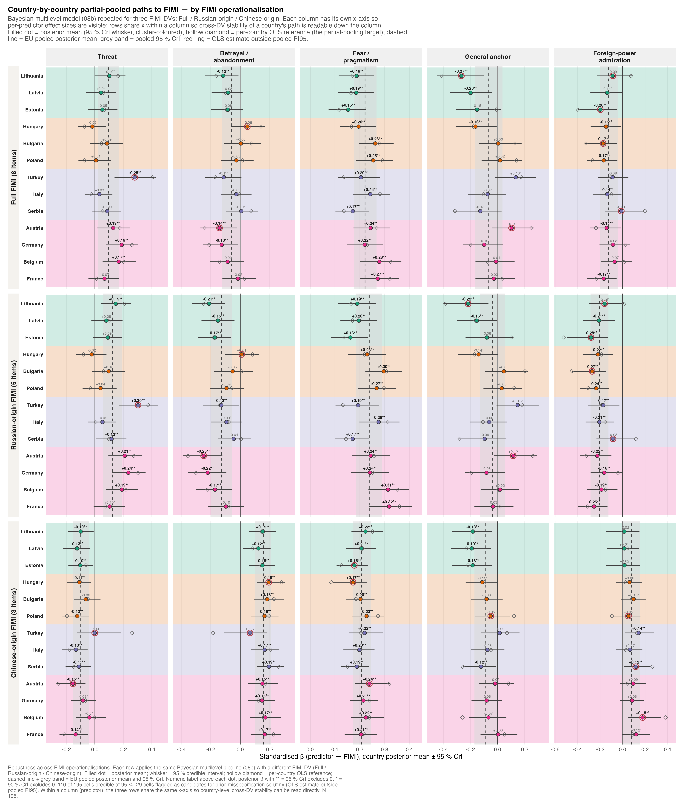
Predictors, civic anchors & the nomological network
What receptivity domains relate to FIMI detection, how they connect to civic life, and how the whole construct field hangs together
How to read the relationships
This page reports associations between receptivity domains and FIMI detection, the domains’ relationships to civic anchors, and the full nomological network. Two conventions:
- For predictor → detection paths, positive = better detection (the domain travels with recognising manipulation) and negative = a detection blind spot. These are cross-sectional associations, not causal effects (ShadishCookCampbell2002?).
- The headline relationships come from a multilevel Bayesian model (BRMS) of the S4 multinational data; cross-study paths come from the canonical higher-order composite SEM. The heavy estimation is documented on the academic site and in Reproducibility & methods; here we embed the print-ready results and the code that drew them.
The most policy-relevant result: domain meaning changes by source and country
The key finding is not only that countries differ in overall detection — it is that the same receptivity domain can be associated with better detection in one source context and weaker detection in another.
- Fear / Pragmatism is the one consistently protective domain. Respondents more wary of hostile foreign actors detect FIMI better across the board: Full FIMI (= .22) (95% CrI [.18, .27]), Russian-origin (= .24) ([.18, .29]), Chinese-origin (= .21) ([.17, .24]).
- Threat reverses by source: better Russian-origin detection but worse Chinese-origin detection. Betrayal / Abandonment shows the opposite pattern.
- Foreign-Power Admiration is most clearly linked to poorer Russian-origin detection; its Chinese-origin pattern is weaker and less uniform.
- The General Anchor flips by country: negatively associated with detection in some (e.g. Lithuania, Latvia, Hungary, Serbia, depending on variant), but positive for Russian-origin FIMI in Turkey and Austria.
ImportantPolicy reading
Do not collapse these paths into a single “FIMI vulnerability” score. The same public attitude can be associated with better detection for one source and worse for another. Monitoring, prebunking, and media-literacy work should report at least three layers together: the country’s domain profile, Full FIMI detection, and source-specific detection paths.
Code
scripts/policy_report/F-22d_country_forest_brms_fimi_variants.R
#!/usr/bin/env Rscript
#' F-22d — Country × predictor forest plot across FIMI operationalisations.
#'
#' Robustness companion to F-22b. Same Bayesian multilevel partial-pooling
#' model (08b), but fitted three times against the three FIMI DV variants:
#'
#' ROW 1 — Full FIMI (8 items, the primary DV used in F-22b)
#' ROW 2 — Russian-origin FIMI (5 items)
#' ROW 3 — Chinese-origin FIMI (3 items)
#'
#' Within a column (predictor), the three rows are directly comparable —
#' they share the same x-axis range. Cross-row stability of the country
#' posterior pattern indicates the country-level path is robust to which
#' subset of FIMI items defines the outcome; cross-row divergence flags
#' a predictor whose path depends on the FIMI variant.
#'
#' Source CSVs (produced by 08b run once per variant):
#' outputs/policy_report/tables/s4_country_predictor_paths_brms_full.csv
#' outputs/policy_report/tables/s4_country_predictor_paths_brms_russian.csv
#' outputs/policy_report/tables/s4_country_predictor_paths_brms_chinese.csv
#' outputs/policy_report/tables/s4_country_predictor_pooled_brms_{full,russian,chinese}.csv
#'
#' Output:
#' outputs/policy_report/figures/F-22d_country_forest_brms_fimi_variants.{png,pdf,rds}
suppressPackageStartupMessages({
library(ggplot2)
library(dplyr)
library(readr)
library(forcats)
library(patchwork)
library(here)
})
source(here::here("scripts", "policy_report", "_theme.R"))
SCRIPT_ID <- "F-22d_country_forest_brms_fimi_variants"
OUT_BASE <- file.path(POLICY_REPORT_FIG_DIR, SCRIPT_ID)
set.seed(42)
VARIANTS <- c(
"full" = "Full FIMI (8 items)",
"russian" = "Russian-origin FIMI (5 items)",
"chinese" = "Chinese-origin FIMI (3 items)"
)
# ---- Read + bind all three variants ---------------------------------------
read_variant <- function(slug, label) {
paths_csv <- here::here(
"outputs", "policy_report", "tables",
sprintf("s4_country_predictor_paths_brms_%s.csv", slug)
)
pooled_csv <- here::here(
"outputs", "policy_report", "tables",
sprintf("s4_country_predictor_pooled_brms_%s.csv", slug)
)
if (!file.exists(paths_csv) || !file.exists(pooled_csv)) {
stop(sprintf(paste0("F-22d: required input(s) missing for variant '%s'.\n",
" expected: %s\n expected: %s\n",
"Run main_08b_all_variants() in ",
"R/policy_report/08b_country_predictor_brms.R first."),
slug, paths_csv, pooled_csv), call. = FALSE)
}
list(
paths = readr::read_csv(paths_csv, show_col_types = FALSE) |>
dplyr::mutate(fimi_variant_slug = slug,
fimi_variant_label = label),
pooled = readr::read_csv(pooled_csv, show_col_types = FALSE) |>
dplyr::mutate(fimi_variant_slug = slug,
fimi_variant_label = label)
)
}
variant_data <- purrr::map2(names(VARIANTS), unname(VARIANTS), read_variant)
dat <- dplyr::bind_rows(lapply(variant_data, `[[`, "paths"))
pooled <- dplyr::bind_rows(lapply(variant_data, `[[`, "pooled"))
if (nrow(dat) == 0L || nrow(pooled) == 0L) {
stop("F-22d: combined per-variant inputs returned zero rows.",
call. = FALSE)
}
# ---- Country + predictor ordering -----------------------------------------
PREDICTOR_ORDER <- c("THREAT", "ABAND", "FEAR", "GEN", "SUPF")
PREDICTOR_LBL <- c(
THREAT = "Threat",
ABAND = "Betrayal /\nabandonment",
FEAR = "Fear /\npragmatism",
GEN = "General anchor",
SUPF = "Foreign-power\nadmiration"
)
CLUSTER_ORDER <- c("Baltic", "Central-East", "Southern", "Western")
# Country order — by regional cluster then average |posterior| in the Full
# FIMI variant (so the row order is anchored to the primary DV and the
# robustness rows below are visually comparable line-by-line).
country_avg <- dat |>
dplyr::filter(fimi_variant_slug == "full",
predictor %in% PREDICTOR_ORDER) |>
dplyr::group_by(country_iso3, country_name, cluster) |>
dplyr::summarise(mean_abs = mean(abs(posterior_mean), na.rm = TRUE),
.groups = "drop") |>
dplyr::mutate(cluster = factor(cluster, levels = CLUSTER_ORDER)) |>
dplyr::arrange(dplyr::desc(cluster), mean_abs)
country_order <- country_avg$country_name
sig_marker <- function(sig_95, sig_90) {
dplyr::case_when(
sig_95 ~ "**",
sig_90 & !sig_95 ~ "*",
TRUE ~ ""
)
}
dat <- dat |>
dplyr::filter(predictor %in% PREDICTOR_ORDER) |>
dplyr::mutate(
predictor = factor(PREDICTOR_LBL[predictor],
levels = PREDICTOR_LBL[PREDICTOR_ORDER]),
country_name = factor(country_name, levels = country_order),
cluster = factor(cluster, levels = CLUSTER_ORDER),
fimi_variant_label = factor(fimi_variant_label, levels = unname(VARIANTS)),
asterisk = sig_marker(sig_95, sig_90),
label_text = sprintf("%+.2f%s", posterior_mean, asterisk),
flagged_prior = !in_eu_pi95
)
pooled <- pooled |>
dplyr::filter(predictor %in% PREDICTOR_ORDER) |>
dplyr::mutate(predictor = factor(PREDICTOR_LBL[predictor],
levels = PREDICTOR_LBL[PREDICTOR_ORDER]),
fimi_variant_label = factor(fimi_variant_label,
levels = unname(VARIANTS)))
# ---- Cluster bands + palette ----------------------------------------------
cluster_pal <- setNames(
policy_report_palette("categorical", n = 4L),
CLUSTER_ORDER
)
dat <- dat |>
dplyr::mutate(cluster_fill = cluster_pal[as.character(cluster)])
band_alpha_pal <- setNames(
paste0(cluster_pal, "33"), # ~20 % alpha
CLUSTER_ORDER
)
cluster_bands <- country_avg |>
dplyr::mutate(y_idx = match(country_name, country_order)) |>
dplyr::group_by(cluster) |>
dplyr::summarise(ymin = min(y_idx) - 0.5,
ymax = max(y_idx) + 0.5,
y_mid = (min(y_idx) + max(y_idx)) / 2,
.groups = "drop") |>
dplyr::mutate(band_fill = band_alpha_pal[as.character(cluster)],
cluster_label = as.character(cluster))
# ---- Build the 3×5 forest plot --------------------------------------------
n_sig <- sum(dat$sig_95, na.rm = TRUE)
n_total <- nrow(dat)
n_flagged <- sum(dat$flagged_prior, na.rm = TRUE)
caption <- policy_report_caption(
source = "outputs/policy_report/tables/s4_country_predictor_paths_brms_{full,russian,chinese}.csv",
n = n_total,
script = paste0(SCRIPT_ID, ".R"),
prefix = sprintf(paste0(
"Robustness across FIMI operationalisations. Each row applies the same ",
"Bayesian multilevel pipeline (08b) with a different FIMI DV (Full / ",
"Russian-origin / Chinese-origin). Filled dot = posterior mean; whisker ",
"= 95 %% credible interval; hollow diamond = per-country OLS reference; ",
"dashed line + grey band = EU pooled posterior mean and 95 %% CrI. ",
"Numeric label above each dot: posterior β with ** = 95 %% CrI excludes 0, ",
"* = 90 %% CrI excludes 0. %d of %d cells credible at 95 %%; %d cells ",
"flagged as candidates for prior-misspecification scrutiny (OLS estimate ",
"outside pooled PI95). Within a column (predictor), the three rows share ",
"the same x-axis so country-level cross-DV stability can be read directly."),
n_sig, n_total, n_flagged),
width = 145L
)
p_forest <- ggplot2::ggplot(
dat,
ggplot2::aes(x = posterior_mean, y = country_name)
) +
# Cluster row bands.
ggplot2::geom_rect(
data = cluster_bands,
ggplot2::aes(ymin = ymin, ymax = ymax,
xmin = -Inf, xmax = Inf,
fill = band_fill),
inherit.aes = FALSE,
colour = NA
) +
ggplot2::scale_fill_identity() +
# Vertical zero reference.
ggplot2::geom_vline(xintercept = 0, colour = "grey25",
linewidth = 0.45) +
# EU pooled CrI band per facet (per row × column).
ggplot2::geom_rect(
data = pooled,
ggplot2::aes(xmin = eu_q025, xmax = eu_q975,
ymin = -Inf, ymax = Inf),
inherit.aes = FALSE,
fill = "grey85", colour = NA, alpha = 0.55
) +
# EU pooled posterior mean (dashed vertical).
ggplot2::geom_vline(
data = pooled,
ggplot2::aes(xintercept = eu_pooled_mean),
colour = "grey25", linewidth = 0.5, linetype = "dashed"
) +
# Country 95 % CrI whisker.
ggplot2::geom_errorbarh(
ggplot2::aes(xmin = q025, xmax = q975),
height = 0, linewidth = 0.55, colour = "grey25"
) +
# ML reference (hollow diamond).
ggplot2::geom_point(
ggplot2::aes(x = ml_estimate, y = country_name),
shape = 5, size = 1.6, stroke = 0.5, colour = "grey40"
) +
# Country posterior mean (filled dot, cluster colour).
ggplot2::geom_point(
ggplot2::aes(fill = cluster_fill),
shape = 21, size = 2.3, stroke = 0.5, colour = "grey20"
) +
# Red ring on prior-misspecification flagged cells.
ggplot2::geom_point(
data = dat |> dplyr::filter(flagged_prior),
ggplot2::aes(x = posterior_mean, y = country_name),
shape = 21, size = 3.6, stroke = 0.8,
fill = NA, colour = "#B23A48"
) +
# Label above the dot — two layers because ggplot2 has no
# `scale_fontface_identity`.
ggplot2::geom_text(
data = dat |> dplyr::filter(sig_95),
ggplot2::aes(label = label_text),
vjust = -1.05, hjust = 0.5,
size = 2.2, colour = "grey10", fontface = "bold",
family = .policy_report_resolve_font(POLICY_REPORT_BASE_FONT)
) +
ggplot2::geom_text(
data = dat |> dplyr::filter(!sig_95),
ggplot2::aes(label = label_text),
vjust = -1.05, hjust = 0.5,
size = 2.0, colour = "grey45", fontface = "plain",
family = .policy_report_resolve_font(POLICY_REPORT_BASE_FONT)
) +
ggplot2::facet_grid(rows = ggplot2::vars(fimi_variant_label),
cols = ggplot2::vars(predictor),
scales = "free_x", switch = "y") +
ggplot2::scale_x_continuous(
breaks = scales::pretty_breaks(n = 4),
expand = ggplot2::expansion(mult = c(0.10, 0.10))
) +
ggplot2::labs(
title = "Country-by-country partial-pooled paths to FIMI — by FIMI operationalisation",
subtitle = policy_report_wrap(
paste0("Bayesian multilevel model (08b) repeated for three FIMI DVs: ",
"Full / Russian-origin / Chinese-origin. Each column has its ",
"own x-axis so per-predictor effect sizes are visible; rows ",
"share x within a column so cross-DV stability of a country's ",
"path is readable down the column. Filled dot = posterior mean ",
"(95 % CrI whisker, cluster-coloured); hollow diamond = per-",
"country OLS reference (the partial-pooling target); dashed ",
"line = EU pooled posterior mean; grey band = pooled 95 % CrI; ",
"red ring = OLS estimate outside pooled PI95."),
width = 145
),
x = "Standardised β (predictor → FIMI), country posterior mean ± 95 % CrI",
y = NULL,
caption = caption
) +
theme_policy_report(base_size = 10) +
ggplot2::theme(
panel.grid.major.y = ggplot2::element_blank(),
panel.grid.major.x = ggplot2::element_line(colour = "grey94"),
strip.text.x = ggplot2::element_text(face = "bold",
lineheight = 0.95,
size = 9.5),
strip.text.y.left = ggplot2::element_text(face = "bold",
angle = 90,
size = 10,
colour = "grey10",
lineheight = 0.95),
strip.background.x = ggplot2::element_rect(fill = "grey94", colour = NA),
strip.background.y = ggplot2::element_rect(fill = "#F4F2EE", colour = NA),
strip.placement = "outside",
panel.spacing.x = grid::unit(0.5, "lines"),
panel.spacing.y = grid::unit(0.5, "lines"),
axis.text.y = ggplot2::element_text(size = 7.6,
face = "bold",
colour = "grey15")
)
# No cluster patchwork strip — across the 3 facet rows it can't align
# cleanly. The cluster grouping is conveyed by (a) the cluster-coloured
# row bands inside every panel, (b) the cluster-coloured posterior dots,
# and (c) the bold country names on the y-axis. We add a small in-panel
# cluster annotation at the left edge of the leftmost column on each row.
cluster_annot <- cluster_bands |>
dplyr::mutate(
fimi_variant_label = factor(unname(VARIANTS)[1],
levels = unname(VARIANTS)),
predictor = factor(PREDICTOR_LBL[PREDICTOR_ORDER[1L]],
levels = PREDICTOR_LBL[PREDICTOR_ORDER])
)
p_final <- p_forest
# A3 portrait-ish: tall to fit 3 rows of 13 countries each.
paths <- safe_ggsave_rds(p_final, OUT_BASE,
width = 14.5,
height = 17.0,
dpi = 300)
# Cross-variant stability quick summary.
stability <- dat |>
dplyr::select(country_iso3, predictor, fimi_variant_slug, posterior_mean,
sig_95) |>
tidyr::pivot_wider(names_from = fimi_variant_slug,
values_from = c(posterior_mean, sig_95))
# How many cells flip sign across variants?
flip_count <- stability |>
dplyr::mutate(
sign_full = sign(posterior_mean_full),
sign_russian = sign(posterior_mean_russian),
sign_chinese = sign(posterior_mean_chinese),
flips = (sign_full != sign_russian) |
(sign_full != sign_chinese) |
(sign_russian != sign_chinese)
) |>
dplyr::summarise(n_flip_cells = sum(flips, na.rm = TRUE)) |>
dplyr::pull(n_flip_cells)
policy_report_log_outputs(
SCRIPT_ID, paths, input_rows = nrow(dat),
extra = c(
sprintf("Variants plotted: %s", paste(names(VARIANTS), collapse = ", ")),
sprintf("Country × predictor × variant cells: %d", n_total),
sprintf("Credible (95 %% CrI excludes 0): %d / %d", n_sig, n_total),
sprintf("Cells flagged (ML outside pooled PI95): %d", n_flagged),
sprintf("Sign-flip cells (posterior sign differs across variants): %d / 65",
flip_count)
)
)The companion partial-path figures for Full FIMI (point estimates and a path heat-map) are below.
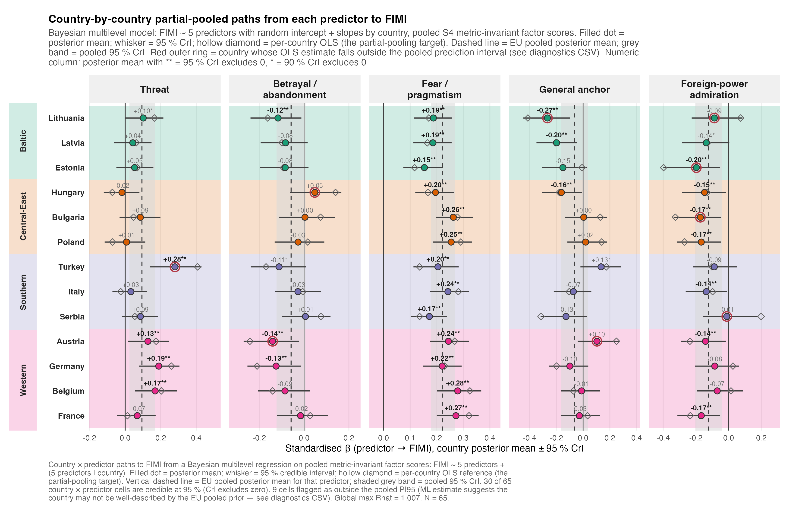
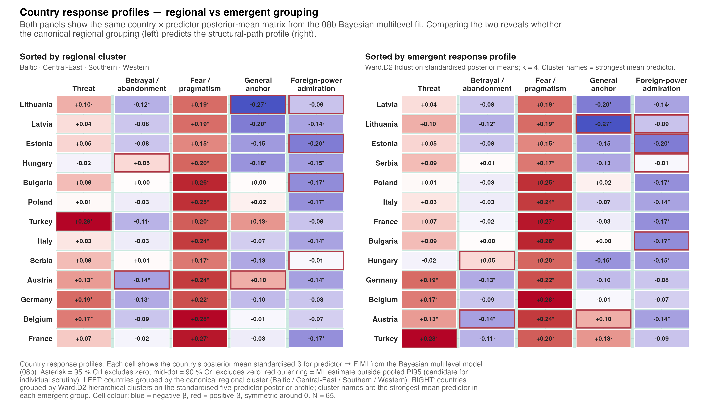
Cross-study predictor paths and explained variance
Across studies and FIMI operationalisations, the canonical higher-order composite SEM gives the standardised predictor → FIMI paths (forest plot) and the variance explained (R²). The R² panel provides scale for the predictive models and discourages over-reading individual coefficients.
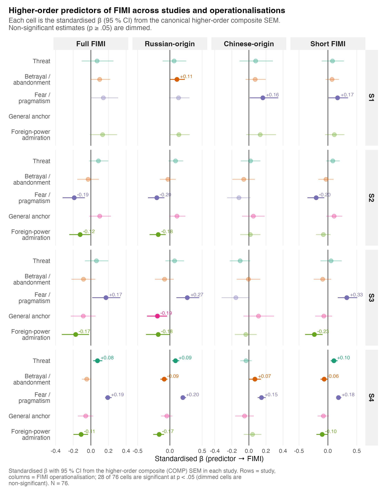
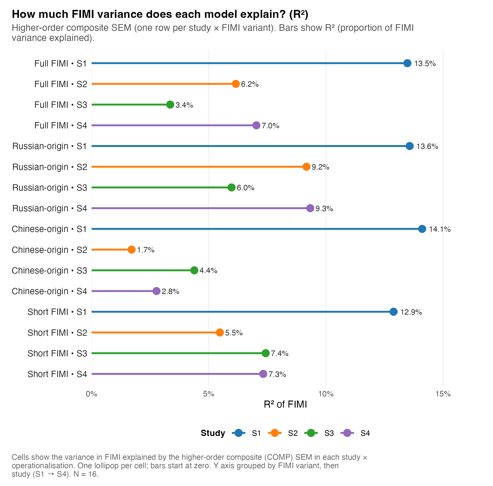
Full structural path estimates (Annex E.1):
| Annex E.1 — Full structural path estimates | ||||||||||
| Standardised β coefficients from each higher-order DisInforMeter composite to each FIMI operationalisation. Per-study rows come from the canonical COMP family of prediction models (same filter as F-18); S4 rows reflect the overall structural model. ✓ marks paths with p < .05. | ||||||||||
| Study | FIMI version | Predictor | β (std) | SE | z | p | CI lower | CI upper | Sig | Block |
|---|---|---|---|---|---|---|---|---|---|---|
| S1 | Chinese FIMI | ABAND | 0.073 | 0.060 | 1.311 | 0.1899 | −0.039 | 0.198 | Per-study prediction (COMP family) | |
| S1 | Chinese FIMI | FEAR | 0.163 | 0.086 | 2.061 | 0.0393 | 0.009 | 0.344 | ✓ | Per-study prediction (COMP family) |
| S1 | Chinese FIMI | SUPF | 0.133 | 0.089 | 1.607 | 0.1080 | −0.031 | 0.318 | Per-study prediction (COMP family) | |
| S1 | Chinese FIMI | THREAT | 0.079 | 0.100 | 0.860 | 0.3898 | −0.109 | 0.281 | Per-study prediction (COMP family) | |
| S1 | Full FIMI | ABAND | 0.100 | 0.057 | 1.883 | 0.0597 | −0.004 | 0.220 | Per-study prediction (COMP family) | |
| S1 | Full FIMI | FEAR | 0.142 | 0.080 | 1.916 | 0.0554 | −0.004 | 0.309 | Per-study prediction (COMP family) | |
| S1 | Full FIMI | SUPF | 0.133 | 0.079 | 1.801 | 0.0717 | −0.013 | 0.298 | Per-study prediction (COMP family) | |
| S1 | Full FIMI | THREAT | 0.071 | 0.092 | 0.823 | 0.4107 | −0.105 | 0.256 | Per-study prediction (COMP family) | |
| S1 | Russian FIMI | ABAND | 0.109 | 0.058 | 2.027 | 0.0426 | 0.004 | 0.232 | ✓ | Per-study prediction (COMP family) |
| S1 | Russian FIMI | FEAR | 0.134 | 0.081 | 1.781 | 0.0748 | −0.014 | 0.303 | Per-study prediction (COMP family) | |
| S1 | Russian FIMI | SUPF | 0.139 | 0.080 | 1.882 | 0.0598 | −0.006 | 0.306 | Per-study prediction (COMP family) | |
| S1 | Russian FIMI | THREAT | 0.066 | 0.094 | 0.754 | 0.4508 | −0.113 | 0.254 | Per-study prediction (COMP family) | |
| S1 | Short FIMI | ABAND | 0.071 | 0.060 | 1.269 | 0.2043 | −0.041 | 0.192 | Per-study prediction (COMP family) | |
| S1 | Short FIMI | FEAR | 0.167 | 0.086 | 2.081 | 0.0375 | 0.010 | 0.348 | ✓ | Per-study prediction (COMP family) |
| S1 | Short FIMI | SUPF | 0.111 | 0.085 | 1.396 | 0.1628 | −0.048 | 0.286 | Per-study prediction (COMP family) | |
| S1 | Short FIMI | THREAT | 0.079 | 0.098 | 0.863 | 0.3880 | −0.108 | 0.278 | Per-study prediction (COMP family) | |
| S2 | Chinese FIMI | ABAND | −0.245 | 0.160 | −1.569 | 0.1166 | −0.563 | 0.062 | Per-study prediction (COMP family) | |
| S2 | Chinese FIMI | FEAR | −0.139 | 0.073 | −1.935 | 0.0530 | −0.285 | 0.002 | Per-study prediction (COMP family) | |
| S2 | Chinese FIMI | GEN | −0.020 | 0.121 | −0.170 | 0.8649 | −0.257 | 0.216 | Per-study prediction (COMP family) | |
| S2 | Chinese FIMI | SUPF | 0.041 | 0.105 | 0.398 | 0.6905 | −0.164 | 0.248 | Per-study prediction (COMP family) | |
| S2 | Chinese FIMI | THREAT | 0.299 | 0.157 | 1.943 | 0.0520 | −0.003 | 0.612 | Per-study prediction (COMP family) | |
| S2 | Full FIMI | ABAND | −0.194 | 0.143 | −1.422 | 0.1551 | −0.484 | 0.077 | Per-study prediction (COMP family) | |
| S2 | Full FIMI | FEAR | −0.211 | 0.074 | −2.988 | 0.0028 | −0.366 | −0.076 | ✓ | Per-study prediction (COMP family) |
| S2 | Full FIMI | GEN | 0.196 | 0.115 | 1.780 | 0.0751 | −0.021 | 0.430 | Per-study prediction (COMP family) | |
| S2 | Full FIMI | SUPF | −0.135 | 0.083 | −1.696 | 0.0899 | −0.305 | 0.022 | Per-study prediction (COMP family) | |
| S2 | Full FIMI | THREAT | 0.173 | 0.131 | 1.383 | 0.1666 | −0.075 | 0.437 | Per-study prediction (COMP family) | |
| S2 | Russian FIMI | ABAND | −0.127 | 0.142 | −0.951 | 0.3415 | −0.412 | 0.143 | Per-study prediction (COMP family) | |
| S2 | Russian FIMI | FEAR | −0.197 | 0.070 | −2.993 | 0.0028 | −0.345 | −0.072 | ✓ | Per-study prediction (COMP family) |
| S2 | Russian FIMI | GEN | 0.168 | 0.099 | 1.793 | 0.0730 | −0.017 | 0.372 | Per-study prediction (COMP family) | |
| S2 | Russian FIMI | SUPF | −0.217 | 0.080 | −2.869 | 0.0041 | −0.387 | −0.073 | ✓ | Per-study prediction (COMP family) |
| S2 | Russian FIMI | THREAT | 0.099 | 0.128 | 0.817 | 0.4139 | −0.147 | 0.357 | Per-study prediction (COMP family) | |
| S2 | Short FIMI | ABAND | −0.246 | 0.162 | −1.594 | 0.1109 | −0.575 | 0.059 | Per-study prediction (COMP family) | |
| S2 | Short FIMI | FEAR | −0.242 | 0.087 | −2.897 | 0.0038 | −0.425 | −0.082 | ✓ | Per-study prediction (COMP family) |
| S2 | Short FIMI | GEN | 0.197 | 0.147 | 1.400 | 0.1614 | −0.083 | 0.495 | Per-study prediction (COMP family) | |
| S2 | Short FIMI | SUPF | −0.084 | 0.098 | −0.897 | 0.3695 | −0.280 | 0.104 | Per-study prediction (COMP family) | |
| S2 | Short FIMI | THREAT | 0.251 | 0.149 | 1.766 | 0.0774 | −0.029 | 0.555 | Per-study prediction (COMP family) | |
| S3 | Chinese FIMI | ABAND | 0.434 | 0.449 | 0.985 | 0.3248 | −0.438 | 1.321 | Per-study prediction (COMP family) | |
| S3 | Chinese FIMI | FEAR | −0.156 | 0.175 | −0.906 | 0.3647 | −0.501 | 0.184 | Per-study prediction (COMP family) | |
| S3 | Chinese FIMI | GEN | 0.188 | 0.211 | 0.904 | 0.3659 | −0.223 | 0.605 | Per-study prediction (COMP family) | |
| S3 | Chinese FIMI | SUPF | −0.092 | 0.122 | −0.770 | 0.4416 | −0.333 | 0.145 | Per-study prediction (COMP family) | |
| S3 | Chinese FIMI | THREAT | −0.479 | 0.488 | −0.999 | 0.3176 | −1.445 | 0.469 | Per-study prediction (COMP family) | |
| S3 | Full FIMI | ABAND | −0.260 | 0.415 | −0.633 | 0.5269 | −1.077 | 0.551 | Per-study prediction (COMP family) | |
| S3 | Full FIMI | FEAR | 0.147 | 0.198 | 0.753 | 0.4516 | −0.239 | 0.537 | Per-study prediction (COMP family) | |
| S3 | Full FIMI | GEN | −0.057 | 0.245 | −0.236 | 0.8136 | −0.538 | 0.423 | Per-study prediction (COMP family) | |
| S3 | Full FIMI | SUPF | −0.118 | 0.169 | −0.704 | 0.4816 | −0.451 | 0.212 | Per-study prediction (COMP family) | |
| S3 | Full FIMI | THREAT | 0.185 | 0.376 | 0.497 | 0.6194 | −0.551 | 0.925 | Per-study prediction (COMP family) | |
| S3 | Russian FIMI | ABAND | −0.163 | 0.446 | −0.369 | 0.7118 | −1.038 | 0.709 | Per-study prediction (COMP family) | |
| S3 | Russian FIMI | FEAR | 0.136 | 0.224 | 0.614 | 0.5391 | −0.301 | 0.576 | Per-study prediction (COMP family) | |
| S3 | Russian FIMI | GEN | −0.020 | 0.284 | −0.071 | 0.9431 | −0.577 | 0.536 | Per-study prediction (COMP family) | |
| S3 | Russian FIMI | SUPF | −0.155 | 0.195 | −0.809 | 0.4187 | −0.539 | 0.224 | Per-study prediction (COMP family) | |
| S3 | Russian FIMI | THREAT | 0.104 | 0.400 | 0.262 | 0.7930 | −0.680 | 0.890 | Per-study prediction (COMP family) | |
| S3 | Short FIMI | ABAND | −0.689 | 0.561 | −1.284 | 0.1991 | −1.821 | 0.380 | Per-study prediction (COMP family) | |
| S3 | Short FIMI | FEAR | 0.404 | 0.254 | 1.660 | 0.0970 | −0.076 | 0.921 | Per-study prediction (COMP family) | |
| S3 | Short FIMI | GEN | −0.093 | 0.297 | −0.327 | 0.7436 | −0.679 | 0.484 | Per-study prediction (COMP family) | |
| S3 | Short FIMI | SUPF | −0.182 | 0.195 | −0.975 | 0.3298 | −0.572 | 0.192 | Per-study prediction (COMP family) | |
| S3 | Short FIMI | THREAT | 0.548 | 0.494 | 1.163 | 0.2450 | −0.394 | 1.541 | Per-study prediction (COMP family) | |
| S4 | Chinese FIMI | ABAND | 0.023 | 0.166 | 0.140 | 0.8887 | −0.302 | 0.348 | Per-study prediction (COMP family) | |
| S4 | Chinese FIMI | FEAR | 0.137 | 0.030 | 4.641 | 0.0000 | 0.080 | 0.198 | ✓ | Per-study prediction (COMP family) |
| S4 | Chinese FIMI | GEN | −0.066 | 0.044 | −1.507 | 0.1317 | −0.154 | 0.020 | Per-study prediction (COMP family) | |
| S4 | Chinese FIMI | SUPF | 0.053 | 0.045 | 1.206 | 0.2278 | −0.034 | 0.142 | Per-study prediction (COMP family) | |
| S4 | Chinese FIMI | THREAT | 0.027 | 0.184 | 0.148 | 0.8820 | −0.333 | 0.388 | Per-study prediction (COMP family) | |
| S4 | Full FIMI | ABAND | −0.277 | 0.152 | −1.901 | 0.0573 | −0.587 | 0.009 | Per-study prediction (COMP family) | |
| S4 | Full FIMI | FEAR | 0.173 | 0.026 | 7.023 | 0.0000 | 0.130 | 0.231 | ✓ | Per-study prediction (COMP family) |
| S4 | Full FIMI | GEN | −0.068 | 0.036 | −1.967 | 0.0491 | −0.141 | 0.000 | ✓ | Per-study prediction (COMP family) |
| S4 | Full FIMI | SUPF | −0.134 | 0.038 | −3.667 | 0.0002 | −0.214 | −0.065 | ✓ | Per-study prediction (COMP family) |
| S4 | Full FIMI | THREAT | 0.317 | 0.169 | 1.960 | 0.0500 | 0.000 | 0.661 | Per-study prediction (COMP family) | |
| S4 | Russian FIMI | ABAND | −0.317 | 0.159 | −2.111 | 0.0348 | −0.647 | −0.024 | ✓ | Per-study prediction (COMP family) |
| S4 | Russian FIMI | FEAR | 0.186 | 0.027 | 7.360 | 0.0000 | 0.144 | 0.249 | ✓ | Per-study prediction (COMP family) |
| S4 | Russian FIMI | GEN | −0.055 | 0.037 | −1.571 | 0.1162 | −0.131 | 0.014 | Per-study prediction (COMP family) | |
| S4 | Russian FIMI | SUPF | −0.191 | 0.039 | −5.182 | 0.0000 | −0.278 | −0.126 | ✓ | Per-study prediction (COMP family) |
| S4 | Russian FIMI | THREAT | 0.323 | 0.176 | 1.938 | 0.0526 | −0.004 | 0.686 | Per-study prediction (COMP family) | |
| S4 | Short FIMI | ABAND | −0.358 | 0.182 | −2.051 | 0.0403 | −0.731 | −0.017 | ✓ | Per-study prediction (COMP family) |
| S4 | Short FIMI | FEAR | 0.158 | 0.030 | 5.475 | 0.0000 | 0.106 | 0.225 | ✓ | Per-study prediction (COMP family) |
| S4 | Short FIMI | GEN | −0.088 | 0.042 | −2.187 | 0.0288 | −0.174 | −0.010 | ✓ | Per-study prediction (COMP family) |
| S4 | Short FIMI | SUPF | −0.130 | 0.044 | −3.077 | 0.0021 | −0.223 | −0.050 | ✓ | Per-study prediction (COMP family) |
| S4 | Short FIMI | THREAT | 0.415 | 0.203 | 2.141 | 0.0323 | 0.037 | 0.831 | ✓ | Per-study prediction (COMP family) |
| S4 | Chinese-origin FIMI (3 items) | ABAND | 0.027 | 0.165 | 0.165 | 0.8689 | — | — | S4 overall structural | |
| S4 | Chinese-origin FIMI (3 items) | FEAR | 0.139 | 0.030 | 4.693 | 0.0000 | — | — | ✓ | S4 overall structural |
| S4 | Chinese-origin FIMI (3 items) | GEN | −0.052 | 0.054 | −0.979 | 0.3274 | — | — | S4 overall structural | |
| S4 | Chinese-origin FIMI (3 items) | SUPF | 0.054 | 0.053 | 1.040 | 0.2986 | — | — | S4 overall structural | |
| S4 | Chinese-origin FIMI (3 items) | SUPFCH | −0.015 | 0.033 | −0.452 | 0.6510 | — | — | S4 overall structural | |
| S4 | Chinese-origin FIMI (3 items) | THREAT | 0.022 | 0.183 | 0.122 | 0.9031 | — | — | S4 overall structural | |
| S4 | Full FIMI (8 items) | ABAND | −0.275 | 0.152 | −1.890 | 0.0587 | — | — | S4 overall structural | |
| S4 | Full FIMI (8 items) | FEAR | 0.172 | 0.026 | 6.949 | 0.0000 | — | — | ✓ | S4 overall structural |
| S4 | Full FIMI (8 items) | GEN | −0.070 | 0.044 | −1.661 | 0.0967 | — | — | S4 overall structural | |
| S4 | Full FIMI (8 items) | SUPF | −0.164 | 0.044 | −3.920 | 0.0001 | — | — | ✓ | S4 overall structural |
| S4 | Full FIMI (8 items) | SUPFCH | 0.044 | 0.026 | 1.782 | 0.0748 | — | — | S4 overall structural | |
| S4 | Full FIMI (8 items) | THREAT | 0.316 | 0.168 | 1.961 | 0.0499 | — | — | ✓ | S4 overall structural |
| S4 | Russian-origin FIMI (5 items) | ABAND | −0.317 | 0.159 | −2.110 | 0.0348 | — | — | ✓ | S4 overall structural |
| S4 | Russian-origin FIMI (5 items) | FEAR | 0.184 | 0.027 | 7.228 | 0.0000 | — | — | ✓ | S4 overall structural |
| S4 | Russian-origin FIMI (5 items) | GEN | −0.060 | 0.045 | −1.408 | 0.1591 | — | — | S4 overall structural | |
| S4 | Russian-origin FIMI (5 items) | SUPF | −0.232 | 0.045 | −5.469 | 0.0000 | — | — | ✓ | S4 overall structural |
| S4 | Russian-origin FIMI (5 items) | SUPFCH | 0.061 | 0.027 | 2.382 | 0.0172 | — | — | ✓ | S4 overall structural |
| S4 | Russian-origin FIMI (5 items) | THREAT | 0.324 | 0.176 | 1.949 | 0.0513 | — | — | S4 overall structural | |
| S4 | Short FIMI (4 items) | ABAND | −0.353 | 0.181 | −2.034 | 0.0420 | — | — | ✓ | S4 overall structural |
| S4 | Short FIMI (4 items) | FEAR | 0.158 | 0.030 | 5.441 | 0.0000 | — | — | ✓ | S4 overall structural |
| S4 | Short FIMI (4 items) | GEN | −0.093 | 0.051 | −1.892 | 0.0585 | — | — | S4 overall structural | |
| S4 | Short FIMI (4 items) | SUPF | −0.149 | 0.051 | −3.046 | 0.0023 | — | — | ✓ | S4 overall structural |
| S4 | Short FIMI (4 items) | SUPFCH | 0.031 | 0.031 | 1.057 | 0.2904 | — | — | S4 overall structural | |
| S4 | Short FIMI (4 items) | THREAT | 0.411 | 0.201 | 2.137 | 0.0326 | — | — | ✓ | S4 overall structural |
| Source: outputs/tables/fimi_prediction_paths.csv (COMP family) plus outputs/tables/s4_fimi_paths.csv. Reproduction code: scripts/policy_report/A-06_structural_paths.R. | ||||||||||
Country latent means (scalar) — with the comparability caveat
Where scalar comparability is invoked, the country latent means by FIMI variant are reported as a technical supplement. Because scalar invariance is weaker than metric (see Measurement quality), absolute latent-mean comparisons carry a caveat; an OLS country-mean sanity check is provided alongside.
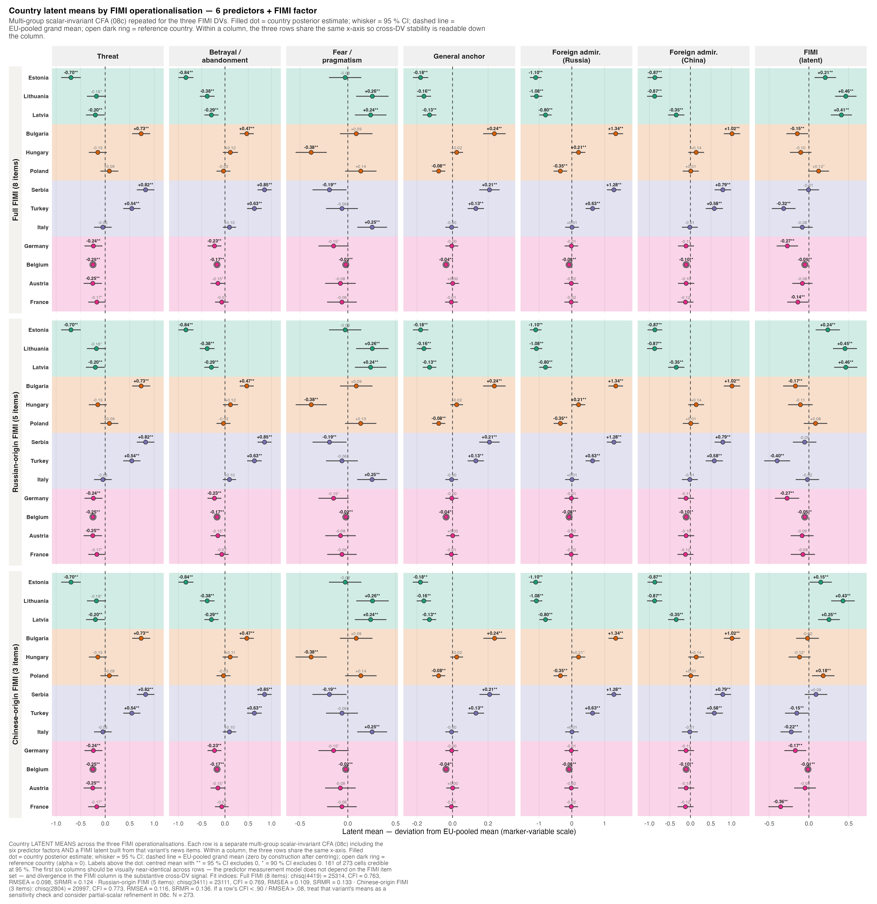
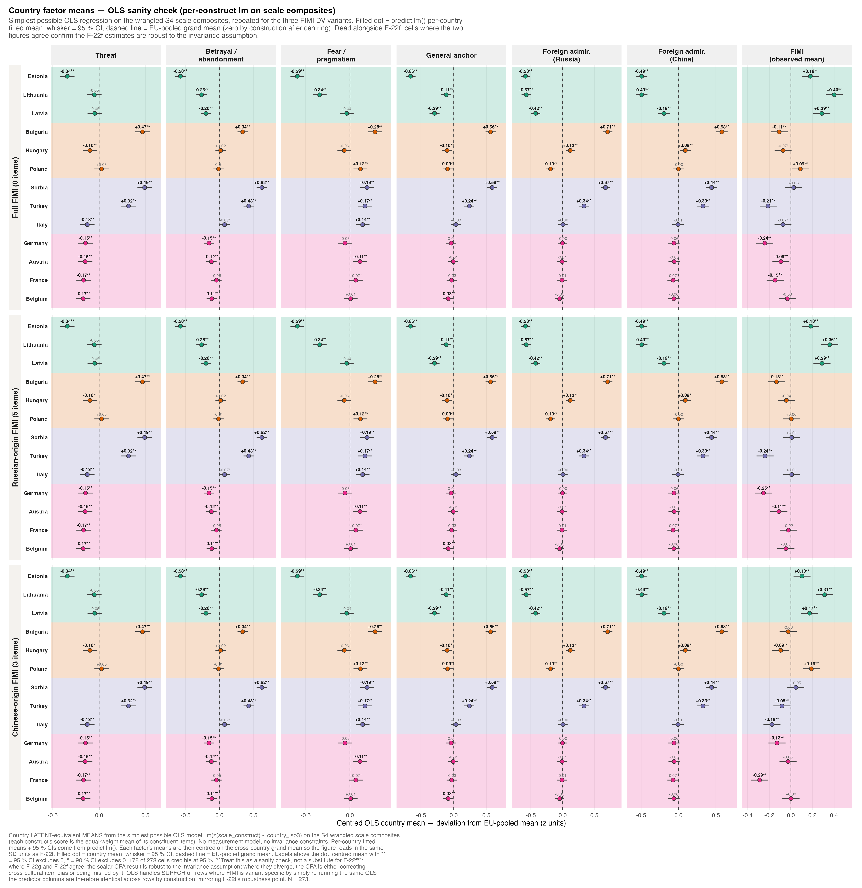
Civic anchors
Do the DisInforMeter domains connect to the wider civic conditions that make FIMI resilience stronger or weaker? Betrayal / Abandonment is the clearest institutional-trust construct: it tracks lower institutional trust, external political efficacy, EU support, social trust, and life satisfaction, and higher perceived foreign-actor salience. Threat also tracks lower institutional trust and EU support, while Fear / Pragmatism is tied to perceived misinformation impact and responsibility for prevention (OECD2017Trust?; ESS2024Round11?; NiemiCraigMattei1991?; AkkermanMuddeZaslove2014?).
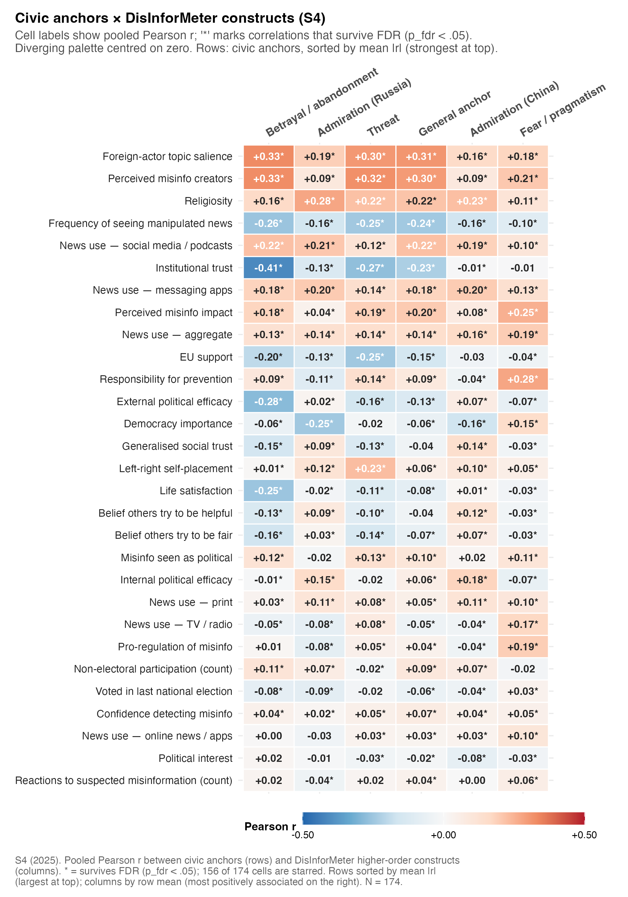
Code
scripts/policy_report/F-20_civic_anchor_heatmap.R
#!/usr/bin/env Rscript
#' F-20 — Civic anchor correlation heatmap (nomological network).
#'
#' Spec: rows = DisInforMeter higher-order construct, columns = civic
#' anchor variable, cell = pooled r. Asterisks mark cells where FDR-
#' corrected p < .05. Divergent palette centred on zero. Rows sorted by
#' row mean.
#'
#' Source CSV: outputs/policy_report/tables/s4_anchor_correlations_wide.csv
#' outputs/policy_report/tables/s4_anchor_correlations_wide_sig.csv
#' (twin "*" marker matrix; cells with `*` survive FDR)
#' Output: outputs/policy_report/figures/F-20_civic_anchor_heatmap.{png,pdf,rds}
suppressPackageStartupMessages({
library(ggplot2)
library(dplyr)
library(tidyr)
library(readr)
library(forcats)
library(here)
})
source(here::here("scripts", "policy_report", "_theme.R"))
SCRIPT_ID <- "F-20_civic_anchor_heatmap"
SOURCE_CSV <- here::here("outputs", "policy_report", "tables",
"s4_anchor_correlations_wide.csv")
SIG_CSV <- here::here("outputs", "policy_report", "tables",
"s4_anchor_correlations_wide_sig.csv")
OUT_BASE <- file.path(POLICY_REPORT_FIG_DIR, SCRIPT_ID)
set.seed(42)
dat_w <- readr::read_csv(SOURCE_CSV, show_col_types = FALSE)
policy_report_check_input(dat_w, SOURCE_CSV)
sig_w <- readr::read_csv(SIG_CSV, show_col_types = FALSE,
col_types = readr::cols(.default = "c"))
policy_report_check_input(sig_w, SIG_CSV)
PREDICTOR_LBL <- c(
THREAT = "Threat",
ABAND = "Betrayal / abandonment",
FEAR = "Fear / pragmatism",
GEN = "General anchor",
SUPF = "Admiration (Russia)",
SUPFCH = "Admiration (China)"
)
# Pivot correlations to long.
long_r <- dat_w %>%
tidyr::pivot_longer(-predictor_label,
names_to = "anchor",
values_to = "r")
# Pivot significance marks to long; "*" means survived FDR (p_fdr < .05).
long_s <- sig_w %>%
tidyr::pivot_longer(-predictor_label,
names_to = "anchor",
values_to = "sig_mark") %>%
dplyr::mutate(sig_mark = dplyr::coalesce(sig_mark, ""),
survived_fdr = sig_mark == "*")
long <- long_r %>%
dplyr::left_join(long_s, by = c("predictor_label", "anchor")) %>%
dplyr::mutate(
construct_lbl = factor(PREDICTOR_LBL[predictor_label],
levels = PREDICTOR_LBL),
cell_label = ifelse(is.na(r), "",
sprintf("%+.2f%s", r,
ifelse(survived_fdr, "*", "")))
)
# Transpose layout: anchors on Y (the longer list, 29 entries), constructs
# on X (6 entries). Cells become tall + narrow but every row label fits
# without rotation. Anchors are sorted top-to-bottom by mean |r| (largest
# correlation block at top); constructs are sorted left-to-right by row
# mean r (most strongly-positive on the right).
anchor_strength <- long %>%
dplyr::group_by(anchor) %>%
dplyr::summarise(strength = mean(abs(r), na.rm = TRUE), .groups = "drop") %>%
dplyr::arrange(strength) # ascending so largest ends up at top
long <- long %>%
dplyr::mutate(anchor = factor(anchor, levels = anchor_strength$anchor))
construct_order <- long %>%
dplyr::group_by(construct_lbl) %>%
dplyr::summarise(row_mean = mean(r, na.rm = TRUE), .groups = "drop") %>%
dplyr::arrange(row_mean) %>%
dplyr::pull(construct_lbl)
long <- long %>%
dplyr::mutate(construct_lbl = factor(construct_lbl,
levels = construct_order))
# Diverging palette centred on zero. Use a symmetric span derived from the
# data so the gradient never compresses against the extremes.
max_abs <- max(abs(long$r), na.rm = TRUE)
limit_v <- max(0.10, ceiling(max_abs * 10) / 10)
n_sig <- sum(long$survived_fdr, na.rm = TRUE)
n_cells <- nrow(long)
caption <- policy_report_caption(
source = "outputs/policy_report/tables/s4_anchor_correlations_wide.csv",
n = n_cells,
script = paste0(SCRIPT_ID, ".R"),
prefix = sprintf("S4 (2025). Pooled Pearson r between civic anchors (rows) and DisInforMeter higher-order constructs (columns). * = survives FDR (p_fdr < .05); %d of %d cells are starred. Rows sorted by mean |r| (largest at top); columns by row mean (most positively associated on the right).",
n_sig, n_cells))
p <- ggplot2::ggplot(long,
ggplot2::aes(x = construct_lbl, y = anchor,
fill = r)) +
ggplot2::geom_tile(colour = "white", linewidth = 0.4) +
ggplot2::geom_text(
ggplot2::aes(label = cell_label,
colour = ifelse(abs(r) > 0.22, "white", "grey15")),
size = 3.0, fontface = "bold",
family = .policy_report_resolve_font(POLICY_REPORT_BASE_FONT)
) +
ggplot2::scale_fill_gradientn(
colours = policy_report_palette("diverging"),
limits = c(-limit_v, limit_v),
breaks = c(-limit_v, 0, limit_v),
labels = sprintf("%+.2f", c(-limit_v, 0, limit_v)),
oob = scales::squish,
name = "Pearson r"
) +
ggplot2::scale_colour_identity() +
ggplot2::scale_x_discrete(position = "top") +
ggplot2::labs(
title = "Civic anchors × DisInforMeter constructs (S4)",
subtitle = policy_report_wrap("Cell labels show pooled Pearson r; '*' marks correlations that survive FDR (p_fdr < .05). Diverging palette centred on zero. Rows: civic anchors, sorted by mean |r| (strongest at top).", width = 95),
x = NULL, y = NULL,
caption = caption
) +
# F-20 has very long y-tick labels (civic anchors) that push the panel
# rightward; bump the right margin via the central `right_extra` mechanism
# so the diagonal top-axis labels can flow into the extra space instead of
# being clipped at the canvas edge.
theme_policy_report(base_size = 10, right_extra = 46) +
ggplot2::theme(
panel.grid = ggplot2::element_blank(),
axis.ticks = ggplot2::element_blank(),
axis.text.x.top = ggplot2::element_text(angle = 30, hjust = 0,
vjust = 0, size = 9,
face = "bold",
lineheight = 0.9),
axis.text.x = ggplot2::element_text(angle = 30, hjust = 0,
vjust = 0, size = 9,
face = "bold",
lineheight = 0.9),
axis.text.y = ggplot2::element_text(size = 8.5, colour = "grey15",
hjust = 1),
legend.position = "bottom",
legend.justification = "left",
legend.box.just = "left",
legend.box.margin = ggplot2::margin(l = 0),
legend.key.width = grid::unit(1.6, "cm"),
legend.key.height = grid::unit(0.35, "cm")
)
dim_p <- POLICY_REPORT_FIGURE_DIMENSIONS$full_page
paths <- safe_ggsave_rds(p, OUT_BASE,
width = dim_p$width,
height = dim_p$height + 0.5)
policy_report_log_outputs(
SCRIPT_ID, paths, input_rows = nrow(long),
extra = c(sprintf("Constructs: %d, Anchors: %d",
dplyr::n_distinct(long$construct_lbl),
dplyr::n_distinct(long$anchor)),
sprintf("Cells significant after FDR: %d / %d", n_sig, n_cells),
sprintf("r range: [%+.2f, %+.2f]",
min(long$r, na.rm = TRUE),
max(long$r, na.rm = TRUE)),
sprintf("Palette limit (symmetric): ±%.2f", limit_v)))Full external-anchor correlations (Annex E.2 — all 174 rows):
| Annex E.2 — Full external anchor correlations | ||||||
| Pearson correlations between DisInforMeter constructs and external civic anchors (Eurobarometer-style indicators). Significance asterisks reflect the FDR-adjusted p (Benjamini–Hochberg): * p < .05, ** p < .01, *** p < .001. | ||||||
| Predictor | Anchor | Family | N | r (pooled) | p (FDR) | |
|---|---|---|---|---|---|---|
| ABAND | Institutional trust | Civic / political | 8,040 | −0.410 | 0.0000 | *** |
| ABAND | External political efficacy | Civic / political | 8,040 | −0.283 | 0.0000 | *** |
| ABAND | Life satisfaction | Civic / political | 8,040 | −0.253 | 0.0000 | *** |
| ABAND | EU support | Civic / political | 8,040 | −0.197 | 0.0000 | *** |
| ABAND | Religiosity | Civic / political | 8,040 | 0.164 | 0.0000 | *** |
| ABAND | Generalised social trust | Civic / political | 8,040 | −0.153 | 0.0000 | *** |
| ABAND | Democracy importance | Civic / political | 8,040 | −0.059 | 0.0000 | *** |
| ABAND | Political interest | Civic / political | 8,040 | 0.017 | 0.7077 | |
| ABAND | Internal political efficacy | Civic / political | 8,040 | −0.008 | 0.0108 | * |
| ABAND | Left-right self-placement | Civic / political | 8,040 | 0.007 | 0.0013 | ** |
| FEAR | Democracy importance | Civic / political | 8,040 | 0.151 | 0.0000 | *** |
| FEAR | Religiosity | Civic / political | 8,040 | 0.111 | 0.0000 | *** |
| FEAR | External political efficacy | Civic / political | 8,040 | −0.071 | 0.0000 | *** |
| FEAR | Internal political efficacy | Civic / political | 8,040 | −0.067 | 0.0000 | *** |
| FEAR | Left-right self-placement | Civic / political | 8,040 | 0.054 | 0.0000 | *** |
| FEAR | EU support | Civic / political | 8,040 | −0.039 | 0.0010 | ** |
| FEAR | Life satisfaction | Civic / political | 8,040 | −0.033 | 0.0009 | *** |
| FEAR | Political interest | Civic / political | 8,040 | −0.033 | 0.0020 | ** |
| FEAR | Generalised social trust | Civic / political | 8,040 | −0.030 | 0.0158 | * |
| FEAR | Institutional trust | Civic / political | 8,040 | −0.005 | 0.8823 | |
| GEN | Institutional trust | Civic / political | 8,040 | −0.228 | 0.0000 | *** |
| GEN | Religiosity | Civic / political | 8,040 | 0.215 | 0.0000 | *** |
| GEN | EU support | Civic / political | 8,040 | −0.152 | 0.0000 | *** |
| GEN | External political efficacy | Civic / political | 8,040 | −0.125 | 0.0000 | *** |
| GEN | Life satisfaction | Civic / political | 8,040 | −0.083 | 0.0000 | *** |
| GEN | Democracy importance | Civic / political | 8,040 | −0.062 | 0.0000 | *** |
| GEN | Internal political efficacy | Civic / political | 8,040 | 0.058 | 0.0001 | *** |
| GEN | Left-right self-placement | Civic / political | 8,040 | 0.056 | 0.0000 | *** |
| GEN | Generalised social trust | Civic / political | 8,040 | −0.036 | 0.8853 | |
| GEN | Political interest | Civic / political | 8,040 | −0.018 | 0.0089 | ** |
| SUPF | Religiosity | Civic / political | 8,040 | 0.276 | 0.0000 | *** |
| SUPF | Democracy importance | Civic / political | 8,040 | −0.246 | 0.0000 | *** |
| SUPF | Internal political efficacy | Civic / political | 8,040 | 0.155 | 0.0000 | *** |
| SUPF | EU support | Civic / political | 8,040 | −0.135 | 0.0000 | *** |
| SUPF | Institutional trust | Civic / political | 8,040 | −0.126 | 0.0026 | ** |
| SUPF | Left-right self-placement | Civic / political | 8,040 | 0.122 | 0.0000 | *** |
| SUPF | Generalised social trust | Civic / political | 8,040 | 0.095 | 0.0000 | *** |
| SUPF | Life satisfaction | Civic / political | 8,040 | −0.023 | 0.0003 | *** |
| SUPF | External political efficacy | Civic / political | 8,040 | 0.023 | 0.0000 | *** |
| SUPF | Political interest | Civic / political | 8,040 | −0.007 | 0.1045 | |
| SUPFCH | Religiosity | Civic / political | 8,040 | 0.225 | 0.0000 | *** |
| SUPFCH | Internal political efficacy | Civic / political | 8,040 | 0.179 | 0.0000 | *** |
| SUPFCH | Democracy importance | Civic / political | 8,040 | −0.165 | 0.0000 | *** |
| SUPFCH | Generalised social trust | Civic / political | 8,040 | 0.141 | 0.0000 | *** |
| SUPFCH | Left-right self-placement | Civic / political | 8,040 | 0.101 | 0.0000 | *** |
| SUPFCH | Political interest | Civic / political | 8,040 | −0.075 | 0.0000 | *** |
| SUPFCH | External political efficacy | Civic / political | 8,040 | 0.070 | 0.0000 | *** |
| SUPFCH | EU support | Civic / political | 8,040 | −0.034 | 0.1677 | |
| SUPFCH | Life satisfaction | Civic / political | 8,040 | 0.013 | 0.0000 | *** |
| SUPFCH | Institutional trust | Civic / political | 8,040 | −0.006 | 0.0000 | *** |
| THREAT | Institutional trust | Civic / political | 8,040 | −0.272 | 0.0000 | *** |
| THREAT | EU support | Civic / political | 8,040 | −0.247 | 0.0000 | *** |
| THREAT | Left-right self-placement | Civic / political | 8,040 | 0.229 | 0.0000 | *** |
| THREAT | Religiosity | Civic / political | 8,040 | 0.221 | 0.0000 | *** |
| THREAT | External political efficacy | Civic / political | 8,040 | −0.156 | 0.0000 | *** |
| THREAT | Generalised social trust | Civic / political | 8,040 | −0.127 | 0.0000 | *** |
| THREAT | Life satisfaction | Civic / political | 8,040 | −0.115 | 0.0000 | *** |
| THREAT | Political interest | Civic / political | 8,040 | −0.031 | 0.0001 | *** |
| THREAT | Democracy importance | Civic / political | 8,040 | −0.020 | 0.0676 | |
| THREAT | Internal political efficacy | Civic / political | 8,040 | −0.018 | 0.0895 | |
| ABAND | Foreign-actor topic salience | Misinformation | 8,040 | 0.330 | 0.0000 | *** |
| ABAND | Perceived misinfo creators | Misinformation | 8,040 | 0.327 | 0.0000 | *** |
| ABAND | Perceived misinfo impact | Misinformation | 8,040 | 0.177 | 0.0000 | *** |
| ABAND | Misinfo seen as political | Misinformation | 8,040 | 0.116 | 0.0000 | *** |
| ABAND | Responsibility for prevention | Misinformation | 8,040 | 0.094 | 0.0000 | *** |
| ABAND | Confidence detecting misinfo | Misinformation | 8,040 | 0.042 | 0.0003 | *** |
| ABAND | Pro-regulation of misinfo | Misinformation | 8,040 | 0.013 | 0.5842 | |
| FEAR | Responsibility for prevention | Misinformation | 8,040 | 0.276 | 0.0000 | *** |
| FEAR | Perceived misinfo impact | Misinformation | 8,040 | 0.255 | 0.0000 | *** |
| FEAR | Perceived misinfo creators | Misinformation | 8,040 | 0.206 | 0.0000 | *** |
| FEAR | Pro-regulation of misinfo | Misinformation | 8,040 | 0.194 | 0.0000 | *** |
| FEAR | Foreign-actor topic salience | Misinformation | 8,040 | 0.176 | 0.0000 | *** |
| FEAR | Misinfo seen as political | Misinformation | 8,040 | 0.106 | 0.0000 | *** |
| FEAR | Confidence detecting misinfo | Misinformation | 8,040 | 0.045 | 0.0002 | *** |
| GEN | Foreign-actor topic salience | Misinformation | 8,040 | 0.309 | 0.0000 | *** |
| GEN | Perceived misinfo creators | Misinformation | 8,040 | 0.299 | 0.0000 | *** |
| GEN | Perceived misinfo impact | Misinformation | 8,040 | 0.201 | 0.0000 | *** |
| GEN | Misinfo seen as political | Misinformation | 8,040 | 0.103 | 0.0000 | *** |
| GEN | Responsibility for prevention | Misinformation | 8,040 | 0.085 | 0.0000 | *** |
| GEN | Confidence detecting misinfo | Misinformation | 8,040 | 0.074 | 0.0000 | *** |
| GEN | Pro-regulation of misinfo | Misinformation | 8,040 | 0.036 | 0.0034 | ** |
| SUPF | Foreign-actor topic salience | Misinformation | 8,040 | 0.191 | 0.0000 | *** |
| SUPF | Responsibility for prevention | Misinformation | 8,040 | −0.107 | 0.0000 | *** |
| SUPF | Perceived misinfo creators | Misinformation | 8,040 | 0.090 | 0.0000 | *** |
| SUPF | Pro-regulation of misinfo | Misinformation | 8,040 | −0.084 | 0.0000 | *** |
| SUPF | Perceived misinfo impact | Misinformation | 8,040 | 0.037 | 0.0000 | *** |
| SUPF | Misinfo seen as political | Misinformation | 8,040 | −0.019 | 0.0616 | |
| SUPF | Confidence detecting misinfo | Misinformation | 8,040 | 0.017 | 0.0302 | * |
| SUPFCH | Foreign-actor topic salience | Misinformation | 8,040 | 0.159 | 0.0000 | *** |
| SUPFCH | Perceived misinfo creators | Misinformation | 8,040 | 0.088 | 0.0000 | *** |
| SUPFCH | Perceived misinfo impact | Misinformation | 8,040 | 0.077 | 0.0000 | *** |
| SUPFCH | Confidence detecting misinfo | Misinformation | 8,040 | 0.043 | 0.0000 | *** |
| SUPFCH | Responsibility for prevention | Misinformation | 8,040 | −0.040 | 0.0010 | *** |
| SUPFCH | Pro-regulation of misinfo | Misinformation | 8,040 | −0.040 | 0.0001 | *** |
| SUPFCH | Misinfo seen as political | Misinformation | 8,040 | 0.016 | 0.1649 | |
| THREAT | Perceived misinfo creators | Misinformation | 8,040 | 0.321 | 0.0000 | *** |
| THREAT | Foreign-actor topic salience | Misinformation | 8,040 | 0.304 | 0.0000 | *** |
| THREAT | Perceived misinfo impact | Misinformation | 8,040 | 0.187 | 0.0000 | *** |
| THREAT | Responsibility for prevention | Misinformation | 8,040 | 0.140 | 0.0000 | *** |
| THREAT | Misinfo seen as political | Misinformation | 8,040 | 0.134 | 0.0000 | *** |
| THREAT | Confidence detecting misinfo | Misinformation | 8,040 | 0.047 | 0.0002 | *** |
| THREAT | Pro-regulation of misinfo | Misinformation | 8,040 | 0.045 | 0.0001 | *** |
| ABAND | Frequency of seeing manipulated news | Prereg #8 behavioural / participation | 8,040 | −0.256 | 0.0000 | *** |
| ABAND | Non-electoral participation (count) | Prereg #8 behavioural / participation | 8,040 | 0.112 | 0.0000 | *** |
| ABAND | Voted in last national election | Prereg #8 behavioural / participation | 7,912 | −0.080 | 0.0000 | *** |
| ABAND | Reactions to suspected misinformation (count) | Prereg #8 behavioural / participation | 8,040 | 0.023 | 0.2989 | |
| FEAR | Frequency of seeing manipulated news | Prereg #8 behavioural / participation | 8,040 | −0.104 | 0.0000 | *** |
| FEAR | Reactions to suspected misinformation (count) | Prereg #8 behavioural / participation | 8,040 | 0.058 | 0.0000 | *** |
| FEAR | Voted in last national election | Prereg #8 behavioural / participation | 7,912 | 0.034 | 0.0024 | ** |
| FEAR | Non-electoral participation (count) | Prereg #8 behavioural / participation | 8,040 | −0.023 | 0.0820 | |
| GEN | Frequency of seeing manipulated news | Prereg #8 behavioural / participation | 8,040 | −0.245 | 0.0000 | *** |
| GEN | Non-electoral participation (count) | Prereg #8 behavioural / participation | 8,040 | 0.094 | 0.0000 | *** |
| GEN | Voted in last national election | Prereg #8 behavioural / participation | 7,912 | −0.056 | 0.0004 | *** |
| GEN | Reactions to suspected misinformation (count) | Prereg #8 behavioural / participation | 8,040 | 0.036 | 0.0019 | ** |
| SUPF | Frequency of seeing manipulated news | Prereg #8 behavioural / participation | 8,040 | −0.159 | 0.0000 | *** |
| SUPF | Voted in last national election | Prereg #8 behavioural / participation | 7,912 | −0.088 | 0.0000 | *** |
| SUPF | Non-electoral participation (count) | Prereg #8 behavioural / participation | 8,040 | 0.066 | 0.0002 | *** |
| SUPF | Reactions to suspected misinformation (count) | Prereg #8 behavioural / participation | 8,040 | −0.040 | 0.0007 | *** |
| SUPFCH | Frequency of seeing manipulated news | Prereg #8 behavioural / participation | 8,040 | −0.164 | 0.0000 | *** |
| SUPFCH | Non-electoral participation (count) | Prereg #8 behavioural / participation | 8,040 | 0.068 | 0.0000 | *** |
| SUPFCH | Voted in last national election | Prereg #8 behavioural / participation | 7,912 | −0.045 | 0.0435 | * |
| SUPFCH | Reactions to suspected misinformation (count) | Prereg #8 behavioural / participation | 8,040 | 0.001 | 0.9165 | |
| THREAT | Frequency of seeing manipulated news | Prereg #8 behavioural / participation | 8,040 | −0.245 | 0.0000 | *** |
| THREAT | Voted in last national election | Prereg #8 behavioural / participation | 7,912 | −0.024 | 0.0759 | |
| THREAT | Reactions to suspected misinformation (count) | Prereg #8 behavioural / participation | 8,040 | 0.022 | 0.6356 | |
| THREAT | Non-electoral participation (count) | Prereg #8 behavioural / participation | 8,040 | −0.019 | 0.0045 | ** |
| ABAND | Belief others try to be fair | Prereg #8 convergent fairness / helpfulness | 8,040 | −0.164 | 0.0000 | *** |
| ABAND | Belief others try to be helpful | Prereg #8 convergent fairness / helpfulness | 8,040 | −0.132 | 0.0000 | *** |
| FEAR | Belief others try to be fair | Prereg #8 convergent fairness / helpfulness | 8,040 | −0.034 | 0.0105 | * |
| FEAR | Belief others try to be helpful | Prereg #8 convergent fairness / helpfulness | 8,040 | −0.031 | 0.0183 | * |
| GEN | Belief others try to be fair | Prereg #8 convergent fairness / helpfulness | 8,040 | −0.069 | 0.0106 | * |
| GEN | Belief others try to be helpful | Prereg #8 convergent fairness / helpfulness | 8,040 | −0.036 | 0.5716 | |
| SUPF | Belief others try to be helpful | Prereg #8 convergent fairness / helpfulness | 8,040 | 0.085 | 0.0000 | *** |
| SUPF | Belief others try to be fair | Prereg #8 convergent fairness / helpfulness | 8,040 | 0.026 | 0.0000 | *** |
| SUPFCH | Belief others try to be helpful | Prereg #8 convergent fairness / helpfulness | 8,040 | 0.120 | 0.0000 | *** |
| SUPFCH | Belief others try to be fair | Prereg #8 convergent fairness / helpfulness | 8,040 | 0.069 | 0.0000 | *** |
| THREAT | Belief others try to be fair | Prereg #8 convergent fairness / helpfulness | 8,040 | −0.140 | 0.0000 | *** |
| THREAT | Belief others try to be helpful | Prereg #8 convergent fairness / helpfulness | 8,040 | −0.100 | 0.0000 | *** |
| ABAND | News use — social media / podcasts | Prereg #8 media-channel use | 8,040 | 0.222 | 0.0000 | *** |
| ABAND | News use — messaging apps | Prereg #8 media-channel use | 8,040 | 0.181 | 0.0000 | *** |
| ABAND | News use — aggregate | Prereg #8 media-channel use | 8,040 | 0.129 | 0.0000 | *** |
| ABAND | News use — TV / radio | Prereg #8 media-channel use | 8,040 | −0.053 | 0.0000 | *** |
| ABAND | News use — print | Prereg #8 media-channel use | 8,040 | 0.028 | 0.0075 | ** |
| ABAND | News use — online news / apps | Prereg #8 media-channel use | 8,040 | 0.004 | 0.6165 | |
| FEAR | News use — aggregate | Prereg #8 media-channel use | 8,040 | 0.195 | 0.0000 | *** |
| FEAR | News use — TV / radio | Prereg #8 media-channel use | 8,040 | 0.171 | 0.0000 | *** |
| FEAR | News use — messaging apps | Prereg #8 media-channel use | 8,040 | 0.134 | 0.0000 | *** |
| FEAR | News use — social media / podcasts | Prereg #8 media-channel use | 8,040 | 0.105 | 0.0000 | *** |
| FEAR | News use — online news / apps | Prereg #8 media-channel use | 8,040 | 0.102 | 0.0000 | *** |
| FEAR | News use — print | Prereg #8 media-channel use | 8,040 | 0.098 | 0.0000 | *** |
| GEN | News use — social media / podcasts | Prereg #8 media-channel use | 8,040 | 0.222 | 0.0000 | *** |
| GEN | News use — messaging apps | Prereg #8 media-channel use | 8,040 | 0.179 | 0.0000 | *** |
| GEN | News use — aggregate | Prereg #8 media-channel use | 8,040 | 0.145 | 0.0000 | *** |
| GEN | News use — print | Prereg #8 media-channel use | 8,040 | 0.050 | 0.0000 | *** |
| GEN | News use — TV / radio | Prereg #8 media-channel use | 8,040 | −0.045 | 0.0000 | *** |
| GEN | News use — online news / apps | Prereg #8 media-channel use | 8,040 | 0.026 | 0.0008 | *** |
| SUPF | News use — social media / podcasts | Prereg #8 media-channel use | 8,040 | 0.207 | 0.0000 | *** |
| SUPF | News use — messaging apps | Prereg #8 media-channel use | 8,040 | 0.201 | 0.0000 | *** |
| SUPF | News use — aggregate | Prereg #8 media-channel use | 8,040 | 0.135 | 0.0000 | *** |
| SUPF | News use — print | Prereg #8 media-channel use | 8,040 | 0.108 | 0.0000 | *** |
| SUPF | News use — TV / radio | Prereg #8 media-channel use | 8,040 | −0.081 | 0.0000 | *** |
| SUPF | News use — online news / apps | Prereg #8 media-channel use | 8,040 | −0.035 | 0.0738 | |
| SUPFCH | News use — messaging apps | Prereg #8 media-channel use | 8,040 | 0.198 | 0.0000 | *** |
| SUPFCH | News use — social media / podcasts | Prereg #8 media-channel use | 8,040 | 0.185 | 0.0000 | *** |
| SUPFCH | News use — aggregate | Prereg #8 media-channel use | 8,040 | 0.163 | 0.0000 | *** |
| SUPFCH | News use — print | Prereg #8 media-channel use | 8,040 | 0.113 | 0.0000 | *** |
| SUPFCH | News use — TV / radio | Prereg #8 media-channel use | 8,040 | −0.036 | 0.0007 | *** |
| SUPFCH | News use — online news / apps | Prereg #8 media-channel use | 8,040 | 0.033 | 0.0000 | *** |
| THREAT | News use — aggregate | Prereg #8 media-channel use | 8,040 | 0.144 | 0.0000 | *** |
| THREAT | News use — messaging apps | Prereg #8 media-channel use | 8,040 | 0.141 | 0.0000 | *** |
| THREAT | News use — social media / podcasts | Prereg #8 media-channel use | 8,040 | 0.118 | 0.0000 | *** |
| THREAT | News use — TV / radio | Prereg #8 media-channel use | 8,040 | 0.076 | 0.0000 | *** |
| THREAT | News use — print | Prereg #8 media-channel use | 8,040 | 0.076 | 0.0000 | *** |
| THREAT | News use — online news / apps | Prereg #8 media-channel use | 8,040 | 0.030 | 0.0086 | ** |
| Source: outputs/tables/s4_external_anchor_correlations.csv (pooled r, FDR-adjusted p, ranked by |r|). N = 8,040. Reproduction code: scripts/policy_report/A-07_anchor_correlations.R. | ||||||
External validation (Study 5)
Study 5 correlated every DisInforMeter construct against a battery of established scales. Three patterns stand out, and together they place the domains cleanly in the wider nomological network (CampbellFiske1959?; BruderEtAl2013?; StephanYbarraMorrison2009?):
- Convergence is exactly where theory predicts. Opposition to LGBT+ rights tracks the matching intergroup-threat scale almost one-to-one ((r = .90)); anti-migration tracks immigrant intergroup threat ((r = .75)); foreign-power admiration tracks warmth toward Russia and China ((r )–(.7)), and with the correct target (Russia items ↔︎ Russia thermometer, China items ↔︎ China thermometer).
- The construct families separate cleanly. Betrayal/Abandonment is the institutional-distrust/populism construct (≈ (-.4) with institutional trust), whereas the threat constructs are largely unrelated to trust — a double dissociation no undifferentiated negativity factor could produce.
- It is neither a conspiracy scale nor a negativity halo. Associations with generic conspiracy mentality are only moderate and uniform (≈ (.3)); admiration raises warmth toward Russia/China while lowering it toward the EU and NATO.
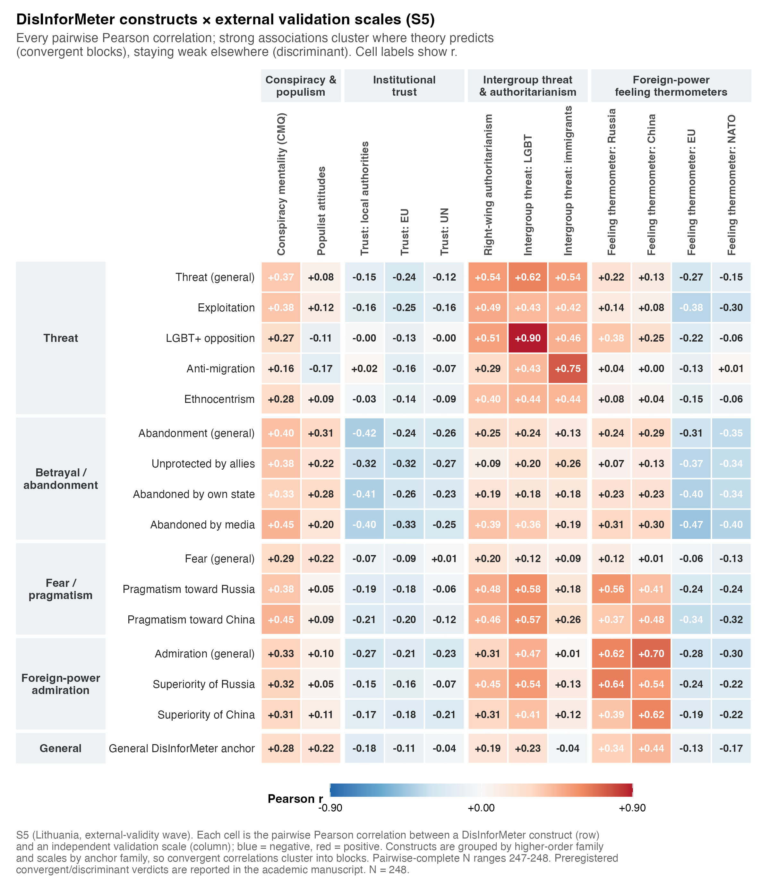
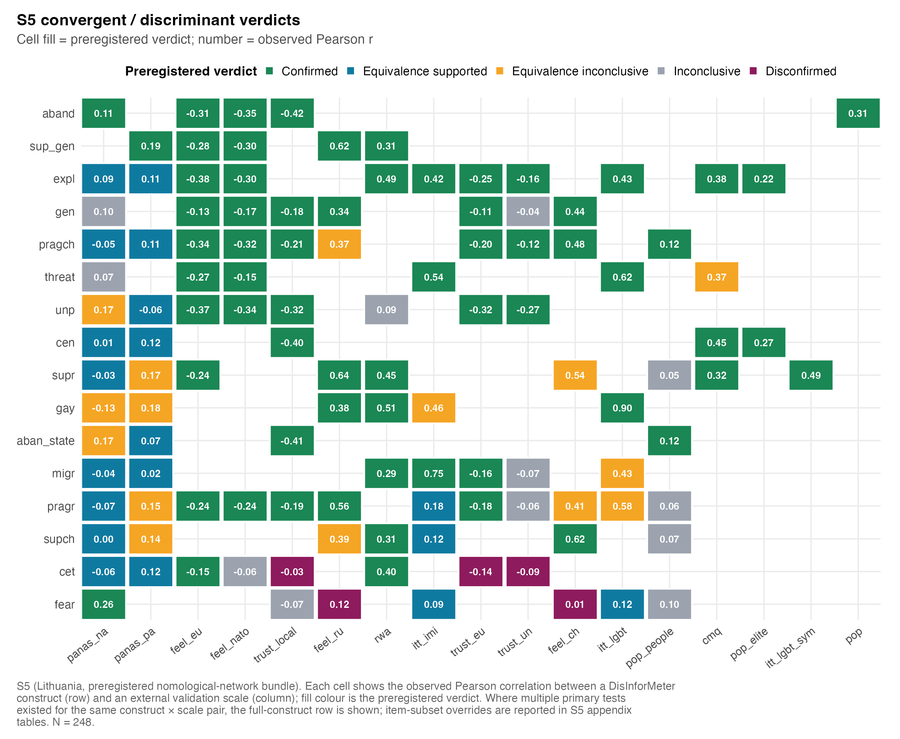
S5 preregistered-hypothesis verdicts (Annex E.3):
| Annex E.3 — S5 preregistered hypothesis verdicts | |||||||
| Each row is a preregistered convergent / discriminant test between a DisInforMeter construct and an external validation instrument. Verdicts are computed from observed r, the two one-sided tests (TOST) for equivalence, and the preregistered region of practical equivalence. | |||||||
| Construct | Validation instrument | Hypothesised sign | N | r | 95 % CI | p (two-sided) | Verdict |
|---|---|---|---|---|---|---|---|
| Abandoned [general] | Institutional trust battery (ESS) - Local Authorities | - | 248 | -0.42 | [-0.52, -0.31] | 0.0000 | confirmed |
| Abandoned [general] | Institutional trust battery (ESS) - Local Authorities | - | 248 | -0.42 | [-0.52, -0.31] | 0.0000 | confirmed |
| Abandoned [general] | Populist attitudes scale (Silva, 2017) | + | 248 | 0.31 | [0.19, 0.42] | 0.0000 | confirmed |
| Abandoned [general] | Populist attitudes scale (Silva, 2017) | + | 248 | 0.29 | [0.17, 0.40] | 0.0000 | confirmed |
| Abandoned [general] | Trait affectivity (I‑PANAS‑SF) | + | 247 | 0.11 | [-0.01, 0.24] | 0.0723 | confirmed |
| Abandoned [general] | feeling thermometer - EU | - | 248 | -0.31 | [-0.42, -0.19] | 0.0000 | confirmed |
| Abandoned [general] | feeling thermometer - NATO | - | 248 | -0.35 | [-0.46, -0.24] | 0.0000 | confirmed |
| Abandoned by media (censorship) | Conspiracy Mentality Questionnaire (CMQ; 5-item) | + | 248 | 0.45 | [0.35, 0.55] | 0.0000 | confirmed |
| Abandoned by media (censorship) | Institutional trust battery (ESS) - Local Authorities | - | 248 | -0.40 | [-0.50, -0.28] | 0.0000 | confirmed |
| Abandoned by media (censorship) | Populist attitudes scale (Silva, 2017) | + | 248 | 0.27 | [0.15, 0.38] | 0.0000 | confirmed |
| Abandoned by media (censorship) | Populist attitudes scale (Silva, 2017) | + | 248 | 0.21 | [0.09, 0.33] | 0.0007 | confirmed |
| Abandoned by media (censorship) | Trait affectivity (I‑PANAS‑SF) | 0 | 248 | 0.12 | [-0.00, 0.25] | 0.0501 | equivalence_supported |
| Abandoned by media (censorship) | Trait affectivity (I‑PANAS‑SF) | 0 | 247 | 0.01 | [-0.11, 0.14] | 0.8495 | equivalence_supported |
| Abandoned by own state | Institutional trust battery (ESS) - Local Authorities | - | 248 | -0.41 | [-0.51, -0.30] | 0.0000 | confirmed |
| Abandoned by own state | Populist attitudes scale (Silva, 2017) | + | 248 | 0.12 | [-0.01, 0.24] | 0.0612 | confirmed |
| Abandoned by own state | Trait affectivity (I‑PANAS‑SF) | 0 | 248 | 0.07 | [-0.06, 0.19] | 0.2880 | equivalence_supported |
| Abandoned by own state | Trait affectivity (I‑PANAS‑SF) | 0 | 247 | 0.17 | [0.05, 0.29] | 0.0060 | equivalence_inconclusive |
| Exploitation | Conspiracy Mentality Questionnaire (CMQ; 5-item) | + | 248 | 0.38 | [0.27, 0.48] | 0.0000 | confirmed |
| Exploitation | Institutional trust battery (ESS) - EU | - | 248 | -0.25 | [-0.36, -0.12] | 0.0001 | confirmed |
| Exploitation | Institutional trust battery (ESS) - United Nations | - | 248 | -0.16 | [-0.28, -0.04] | 0.0096 | confirmed |
| Exploitation | Intergroup threat scale (ITT) - Immigrants | + | 248 | 0.42 | [0.31, 0.52] | 0.0000 | confirmed |
| Exploitation | Intergroup threat scale (ITT) - Immigrants | + | 248 | 0.41 | [0.30, 0.51] | 0.0000 | confirmed |
| Exploitation | Intergroup threat scale (ITT) - LQBT | + | 248 | 0.43 | [0.32, 0.52] | 0.0000 | confirmed |
| Exploitation | Intergroup threat scale (ITT) - LQBT | + | 248 | 0.29 | [0.17, 0.40] | 0.0000 | confirmed |
| Exploitation | Populist attitudes scale (Silva, 2017) | + | 248 | 0.22 | [0.10, 0.33] | 0.0006 | confirmed |
| Exploitation | Right Wing Authoritarianism (RWA short scale) | + | 248 | 0.49 | [0.39, 0.58] | 0.0000 | confirmed |
| Exploitation | Trait affectivity (I‑PANAS‑SF) | 0 | 248 | 0.11 | [-0.02, 0.23] | 0.0859 | equivalence_supported |
| Exploitation | Trait affectivity (I‑PANAS‑SF) | 0 | 247 | 0.09 | [-0.03, 0.21] | 0.1516 | equivalence_supported |
| Exploitation | feeling thermometer - EU | - | 248 | -0.38 | [-0.48, -0.26] | 0.0000 | confirmed |
| Exploitation | feeling thermometer - NATO | - | 248 | -0.30 | [-0.41, -0.19] | 0.0000 | confirmed |
| Fear [general] | Institutional trust battery (ESS) - Local Authorities | - | 248 | -0.07 | [-0.20, 0.05] | 0.2478 | inconclusive |
| Fear [general] | Intergroup threat scale (ITT) - Immigrants | 0 | 248 | 0.09 | [-0.03, 0.21] | 0.1482 | equivalence_supported |
| Fear [general] | Intergroup threat scale (ITT) - LQBT | 0 | 248 | 0.12 | [-0.00, 0.24] | 0.0548 | equivalence_supported |
| Fear [general] | Populist attitudes scale (Silva, 2017) | + | 248 | 0.10 | [-0.02, 0.23] | 0.1028 | inconclusive |
| Fear [general] | Trait affectivity (I‑PANAS‑SF) | + | 247 | 0.26 | [0.14, 0.37] | 0.0000 | confirmed |
| Fear [general] | feeling thermometer - China | u | 247 | 0.01 | [-0.12, 0.13] | 0.9086 | disconfirmed |
| Fear [general] | feeling thermometer - Russia | u | 247 | 0.12 | [-0.00, 0.24] | 0.0573 | disconfirmed |
| General | Institutional trust battery (ESS) - EU | - | 248 | -0.11 | [-0.23, 0.02] | 0.0964 | confirmed |
| General | Institutional trust battery (ESS) - EU | - | 248 | -0.11 | [-0.23, 0.01] | 0.0743 | confirmed |
| General | Institutional trust battery (ESS) - Local Authorities | - | 248 | -0.18 | [-0.30, -0.06] | 0.0040 | confirmed |
| General | Institutional trust battery (ESS) - Local Authorities | - | 248 | -0.16 | [-0.28, -0.04] | 0.0094 | confirmed |
| General | Institutional trust battery (ESS) - United Nations | - | 248 | -0.04 | [-0.16, 0.09] | 0.5398 | inconclusive |
| General | Institutional trust battery (ESS) - United Nations | - | 248 | -0.13 | [-0.25, -0.00] | 0.0456 | confirmed |
| General | Trait affectivity (I‑PANAS‑SF) | + | 247 | 0.10 | [-0.03, 0.22] | 0.1202 | inconclusive |
| General | feeling thermometer - China | + | 247 | 0.44 | [0.33, 0.54] | 0.0000 | confirmed |
| General | feeling thermometer - China | + | 247 | 0.34 | [0.22, 0.44] | 0.0000 | confirmed |
| General | feeling thermometer - EU | - | 248 | -0.13 | [-0.25, -0.00] | 0.0416 | confirmed |
| General | feeling thermometer - EU | - | 248 | -0.03 | [-0.15, 0.10] | 0.6620 | inconclusive |
| General | feeling thermometer - NATO | - | 248 | -0.17 | [-0.29, -0.04] | 0.0078 | confirmed |
| General | feeling thermometer - NATO | - | 248 | -0.12 | [-0.24, 0.00] | 0.0578 | confirmed |
| General | feeling thermometer - Russia | + | 247 | 0.34 | [0.22, 0.44] | 0.0000 | confirmed |
| General | feeling thermometer - Russia | + | 247 | 0.61 | [0.53, 0.69] | 0.0000 | confirmed |
| Immigration | Institutional trust battery (ESS) - EU | - | 248 | -0.16 | [-0.28, -0.04] | 0.0092 | confirmed |
| Immigration | Institutional trust battery (ESS) - United Nations | - | 248 | -0.07 | [-0.20, 0.05] | 0.2485 | inconclusive |
| Immigration | Intergroup threat scale (ITT) - Immigrants | + | 248 | 0.75 | [0.69, 0.80] | 0.0000 | confirmed |
| Immigration | Intergroup threat scale (ITT) - LQBT | 0 | 248 | 0.43 | [0.32, 0.53] | 0.0000 | equivalence_inconclusive |
| Immigration | Right Wing Authoritarianism (RWA short scale) | + | 248 | 0.29 | [0.17, 0.40] | 0.0000 | confirmed |
| Immigration | Trait affectivity (I‑PANAS‑SF) | 0 | 248 | 0.02 | [-0.11, 0.14] | 0.7717 | equivalence_supported |
| Immigration | Trait affectivity (I‑PANAS‑SF) | 0 | 247 | -0.04 | [-0.17, 0.08] | 0.5126 | equivalence_supported |
| Poisonous ethnocentrism | Institutional trust battery (ESS) - EU | + | 248 | -0.14 | [-0.26, -0.02] | 0.0280 | disconfirmed |
| Poisonous ethnocentrism | Institutional trust battery (ESS) - Local Authorities | + | 248 | -0.03 | [-0.15, 0.10] | 0.6623 | disconfirmed |
| Poisonous ethnocentrism | Institutional trust battery (ESS) - United Nations | + | 248 | -0.09 | [-0.21, 0.03] | 0.1470 | disconfirmed |
| Poisonous ethnocentrism | Right Wing Authoritarianism (RWA short scale) | + | 248 | 0.40 | [0.29, 0.50] | 0.0000 | confirmed |
| Poisonous ethnocentrism | Trait affectivity (I‑PANAS‑SF) | 0 | 248 | 0.12 | [-0.00, 0.24] | 0.0558 | equivalence_supported |
| Poisonous ethnocentrism | Trait affectivity (I‑PANAS‑SF) | 0 | 247 | -0.06 | [-0.19, 0.06] | 0.3153 | equivalence_supported |
| Poisonous ethnocentrism | feeling thermometer - EU | - | 248 | -0.15 | [-0.27, -0.03] | 0.0170 | confirmed |
| Poisonous ethnocentrism | feeling thermometer - NATO | - | 248 | -0.06 | [-0.19, 0.06] | 0.3150 | inconclusive |
| Pragmatism China | Institutional trust battery (ESS) - EU | - | 248 | -0.20 | [-0.32, -0.08] | 0.0017 | confirmed |
| Pragmatism China | Institutional trust battery (ESS) - EU | - | 248 | -0.10 | [-0.22, 0.03] | 0.1256 | inconclusive |
| Pragmatism China | Institutional trust battery (ESS) - Local Authorities | - | 248 | -0.21 | [-0.33, -0.09] | 0.0007 | confirmed |
| Pragmatism China | Institutional trust battery (ESS) - United Nations | - | 248 | -0.12 | [-0.24, 0.00] | 0.0569 | confirmed |
| Pragmatism China | Institutional trust battery (ESS) - United Nations | - | 248 | -0.02 | [-0.14, 0.10] | 0.7557 | inconclusive |
| Pragmatism China | Populist attitudes scale (Silva, 2017) | + | 248 | 0.12 | [-0.01, 0.24] | 0.0619 | confirmed |
| Pragmatism China | Trait affectivity (I‑PANAS‑SF) | 0 | 248 | 0.11 | [-0.02, 0.23] | 0.0885 | equivalence_supported |
| Pragmatism China | Trait affectivity (I‑PANAS‑SF) | 0 | 247 | -0.05 | [-0.17, 0.08] | 0.4436 | equivalence_supported |
| Pragmatism China | feeling thermometer - China | + | 247 | 0.48 | [0.38, 0.57] | 0.0000 | confirmed |
| Pragmatism China | feeling thermometer - China | u | 247 | 0.48 | [0.38, 0.57] | 0.0000 | disconfirmed |
| Pragmatism China | feeling thermometer - EU | - | 248 | -0.34 | [-0.45, -0.23] | 0.0000 | confirmed |
| Pragmatism China | feeling thermometer - EU | - | 248 | -0.11 | [-0.23, 0.01] | 0.0810 | confirmed |
| Pragmatism China | feeling thermometer - NATO | - | 248 | -0.32 | [-0.42, -0.20] | 0.0000 | confirmed |
| Pragmatism China | feeling thermometer - NATO | - | 248 | -0.13 | [-0.25, -0.01] | 0.0411 | confirmed |
| Pragmatism China | feeling thermometer - Russia | 0 | 247 | 0.37 | [0.26, 0.47] | 0.0000 | equivalence_inconclusive |
| Pragmatism Russia | Institutional trust battery (ESS) - EU | - | 248 | -0.18 | [-0.30, -0.06] | 0.0040 | confirmed |
| Pragmatism Russia | Institutional trust battery (ESS) - EU | - | 248 | -0.10 | [-0.22, 0.03] | 0.1256 | inconclusive |
| Pragmatism Russia | Institutional trust battery (ESS) - Local Authorities | - | 248 | -0.19 | [-0.30, -0.06] | 0.0034 | confirmed |
| Pragmatism Russia | Institutional trust battery (ESS) - United Nations | - | 248 | -0.06 | [-0.18, 0.07] | 0.3659 | inconclusive |
| Pragmatism Russia | Institutional trust battery (ESS) - United Nations | - | 248 | -0.02 | [-0.14, 0.10] | 0.7557 | inconclusive |
| Pragmatism Russia | Intergroup threat scale (ITT) - Immigrants | 0 | 248 | 0.18 | [0.05, 0.30] | 0.0050 | equivalence_supported |
| Pragmatism Russia | Intergroup threat scale (ITT) - LQBT | 0 | 248 | 0.58 | [0.49, 0.66] | 0.0000 | equivalence_inconclusive |
| Pragmatism Russia | Populist attitudes scale (Silva, 2017) | + | 248 | 0.06 | [-0.07, 0.18] | 0.3573 | inconclusive |
| Pragmatism Russia | Trait affectivity (I‑PANAS‑SF) | 0 | 248 | 0.15 | [0.03, 0.27] | 0.0154 | equivalence_inconclusive |
| Pragmatism Russia | Trait affectivity (I‑PANAS‑SF) | 0 | 247 | -0.07 | [-0.19, 0.06] | 0.2996 | equivalence_supported |
| Pragmatism Russia | feeling thermometer - China | 0 | 247 | 0.41 | [0.30, 0.51] | 0.0000 | equivalence_inconclusive |
| Pragmatism Russia | feeling thermometer - EU | - | 248 | -0.24 | [-0.35, -0.11] | 0.0002 | confirmed |
| Pragmatism Russia | feeling thermometer - EU | - | 248 | -0.11 | [-0.23, 0.01] | 0.0810 | confirmed |
| Pragmatism Russia | feeling thermometer - NATO | - | 248 | -0.24 | [-0.36, -0.12] | 0.0001 | confirmed |
| Pragmatism Russia | feeling thermometer - NATO | - | 248 | -0.13 | [-0.25, -0.01] | 0.0411 | confirmed |
| Pragmatism Russia | feeling thermometer - Russia | + | 247 | 0.56 | [0.47, 0.64] | 0.0000 | confirmed |
| Pragmatism Russia | feeling thermometer - Russia | u | 247 | 0.56 | [0.47, 0.64] | 0.0000 | confirmed |
| Queer Sentiment | Intergroup threat scale (ITT) - Immigrants | 0 | 248 | 0.46 | [0.36, 0.56] | 0.0000 | equivalence_inconclusive |
| Queer Sentiment | Intergroup threat scale (ITT) - LQBT | + | 248 | 0.90 | [0.87, 0.92] | 0.0000 | confirmed |
| Queer Sentiment | Right Wing Authoritarianism (RWA short scale) | + | 248 | 0.51 | [0.42, 0.60] | 0.0000 | confirmed |
| Queer Sentiment | Trait affectivity (I‑PANAS‑SF) | 0 | 248 | 0.18 | [0.06, 0.30] | 0.0036 | equivalence_inconclusive |
| Queer Sentiment | Trait affectivity (I‑PANAS‑SF) | 0 | 247 | -0.13 | [-0.25, -0.01] | 0.0386 | equivalence_inconclusive |
| Queer Sentiment | feeling thermometer - Russia | + | 247 | 0.38 | [0.27, 0.48] | 0.0000 | confirmed |
| Queer Sentiment | feeling thermometer - Russia | + | 247 | 0.42 | [0.31, 0.52] | 0.0000 | confirmed |
| Superiority China | Intergroup threat scale (ITT) - Immigrants | 0 | 248 | 0.12 | [-0.01, 0.24] | 0.0620 | equivalence_supported |
| Superiority China | Populist attitudes scale (Silva, 2017) | + | 248 | 0.07 | [-0.06, 0.19] | 0.3055 | inconclusive |
| Superiority China | Populist attitudes scale (Silva, 2017) | + | 248 | 0.04 | [-0.08, 0.17] | 0.5027 | inconclusive |
| Superiority China | Right Wing Authoritarianism (RWA short scale) | + | 248 | 0.31 | [0.19, 0.41] | 0.0000 | confirmed |
| Superiority China | Trait affectivity (I‑PANAS‑SF) | 0 | 248 | 0.14 | [0.01, 0.26] | 0.0302 | equivalence_inconclusive |
| Superiority China | Trait affectivity (I‑PANAS‑SF) | 0 | 247 | 0.00 | [-0.12, 0.13] | 0.9447 | equivalence_supported |
| Superiority China | feeling thermometer - China | + | 247 | 0.62 | [0.53, 0.69] | 0.0000 | confirmed |
| Superiority China | feeling thermometer - Russia | 0 | 247 | 0.39 | [0.27, 0.49] | 0.0000 | equivalence_inconclusive |
| Superiority Russia | Conspiracy Mentality Questionnaire (CMQ; 5-item) | + | 248 | 0.32 | [0.20, 0.43] | 0.0000 | confirmed |
| Superiority Russia | Intergroup threat scale (ITT) - LQBT | + | 248 | 0.49 | [0.39, 0.58] | 0.0000 | confirmed |
| Superiority Russia | Intergroup threat scale (ITT) - LQBT | + | 248 | 0.46 | [0.36, 0.55] | 0.0000 | confirmed |
| Superiority Russia | Populist attitudes scale (Silva, 2017) | + | 248 | 0.05 | [-0.07, 0.17] | 0.4300 | inconclusive |
| Superiority Russia | Right Wing Authoritarianism (RWA short scale) | + | 248 | 0.45 | [0.34, 0.54] | 0.0000 | confirmed |
| Superiority Russia | Trait affectivity (I‑PANAS‑SF) | 0 | 248 | 0.17 | [0.05, 0.29] | 0.0065 | equivalence_inconclusive |
| Superiority Russia | Trait affectivity (I‑PANAS‑SF) | 0 | 247 | -0.03 | [-0.15, 0.10] | 0.6766 | equivalence_supported |
| Superiority Russia | feeling thermometer - China | 0 | 247 | 0.54 | [0.44, 0.62] | 0.0000 | equivalence_inconclusive |
| Superiority Russia | feeling thermometer - EU | - | 248 | -0.24 | [-0.36, -0.12] | 0.0001 | confirmed |
| Superiority Russia | feeling thermometer - EU | - | 248 | -0.13 | [-0.25, -0.00] | 0.0436 | confirmed |
| Superiority Russia | feeling thermometer - Russia | + | 247 | 0.64 | [0.56, 0.71] | 0.0000 | confirmed |
| Superiority [general] | Right Wing Authoritarianism (RWA short scale) | + | 248 | 0.31 | [0.20, 0.42] | 0.0000 | confirmed |
| Superiority [general] | Trait affectivity (I‑PANAS‑SF) | + | 248 | 0.19 | [0.07, 0.31] | 0.0028 | confirmed |
| Superiority [general] | feeling thermometer - EU | - | 248 | -0.28 | [-0.39, -0.16] | 0.0000 | confirmed |
| Superiority [general] | feeling thermometer - NATO | - | 248 | -0.30 | [-0.41, -0.18] | 0.0000 | confirmed |
| Superiority [general] | feeling thermometer - Russia | + | 247 | 0.62 | [0.53, 0.69] | 0.0000 | confirmed |
| Threat [general] | Conspiracy Mentality Questionnaire (CMQ; 5-item) | 0 | 248 | 0.37 | [0.25, 0.47] | 0.0000 | equivalence_inconclusive |
| Threat [general] | Intergroup threat scale (ITT) - Immigrants | + | 248 | 0.54 | [0.44, 0.62] | 0.0000 | confirmed |
| Threat [general] | Intergroup threat scale (ITT) - Immigrants | + | 248 | 0.59 | [0.50, 0.66] | 0.0000 | confirmed |
| Threat [general] | Intergroup threat scale (ITT) - LQBT | + | 248 | 0.62 | [0.54, 0.69] | 0.0000 | confirmed |
| Threat [general] | Intergroup threat scale (ITT) - LQBT | + | 248 | 0.85 | [0.81, 0.88] | 0.0000 | confirmed |
| Threat [general] | Trait affectivity (I‑PANAS‑SF) | + | 247 | 0.07 | [-0.06, 0.19] | 0.2812 | inconclusive |
| Threat [general] | feeling thermometer - EU | - | 248 | -0.27 | [-0.38, -0.15] | 0.0000 | confirmed |
| Threat [general] | feeling thermometer - EU | - | 248 | -0.26 | [-0.37, -0.14] | 0.0000 | confirmed |
| Threat [general] | feeling thermometer - NATO | - | 248 | -0.15 | [-0.27, -0.03] | 0.0186 | confirmed |
| Threat [general] | feeling thermometer - NATO | - | 248 | -0.28 | [-0.39, -0.16] | 0.0000 | confirmed |
| Unprotected by international allies | Institutional trust battery (ESS) - EU | - | 248 | -0.32 | [-0.43, -0.20] | 0.0000 | confirmed |
| Unprotected by international allies | Institutional trust battery (ESS) - Local Authorities | - | 248 | -0.32 | [-0.42, -0.20] | 0.0000 | confirmed |
| Unprotected by international allies | Institutional trust battery (ESS) - United Nations | - | 248 | -0.27 | [-0.39, -0.15] | 0.0000 | confirmed |
| Unprotected by international allies | Right Wing Authoritarianism (RWA short scale) | + | 248 | 0.09 | [-0.04, 0.21] | 0.1716 | inconclusive |
| Unprotected by international allies | Right Wing Authoritarianism (RWA short scale) | + | 248 | 0.10 | [-0.02, 0.22] | 0.1072 | inconclusive |
| Unprotected by international allies | Trait affectivity (I‑PANAS‑SF) | 0 | 248 | -0.06 | [-0.18, 0.07] | 0.3572 | equivalence_supported |
| Unprotected by international allies | Trait affectivity (I‑PANAS‑SF) | 0 | 247 | 0.17 | [0.05, 0.29] | 0.0077 | equivalence_inconclusive |
| Unprotected by international allies | feeling thermometer - EU | - | 248 | -0.37 | [-0.48, -0.26] | 0.0000 | confirmed |
| Unprotected by international allies | feeling thermometer - NATO | - | 248 | -0.34 | [-0.45, -0.22] | 0.0000 | confirmed |
| Source: outputs/tables/s5_validation_results.csv. N = 248. Reproduction code: scripts/policy_report/A-08_s5_verdicts.R. | |||||||
The nomological network
The network figures visualise the joined S4 + S5 correlation field between the DisInforMeter constructs and their nomological neighbours. They are interpretive layouts — the authoritative numeric correlations live in the anchor/validation tables above; the network shows the structure of those relationships.
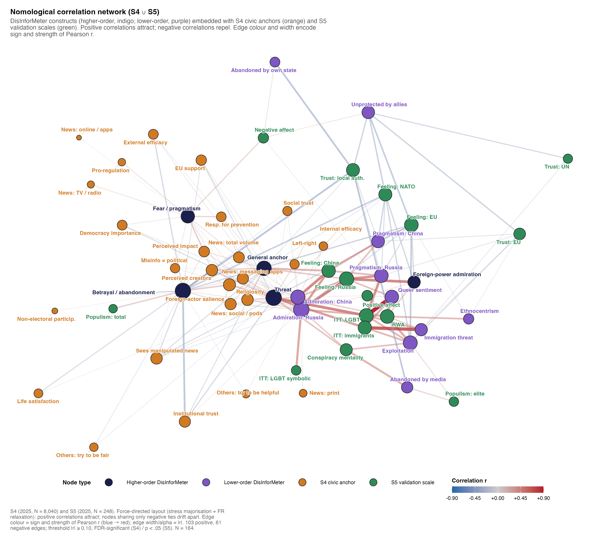
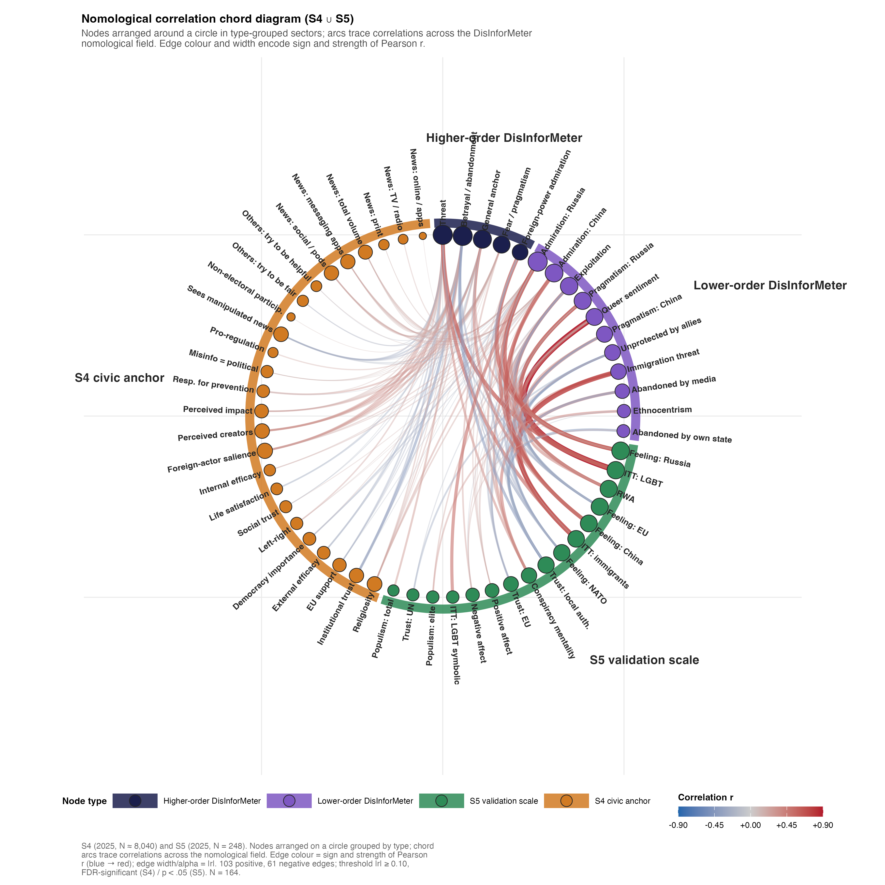
The full pairwise network (all aggregated within-study correlations across 62 nodes) is shown both in full and as an adaptive backbone that keeps every node on the canvas while reducing visual saturation.
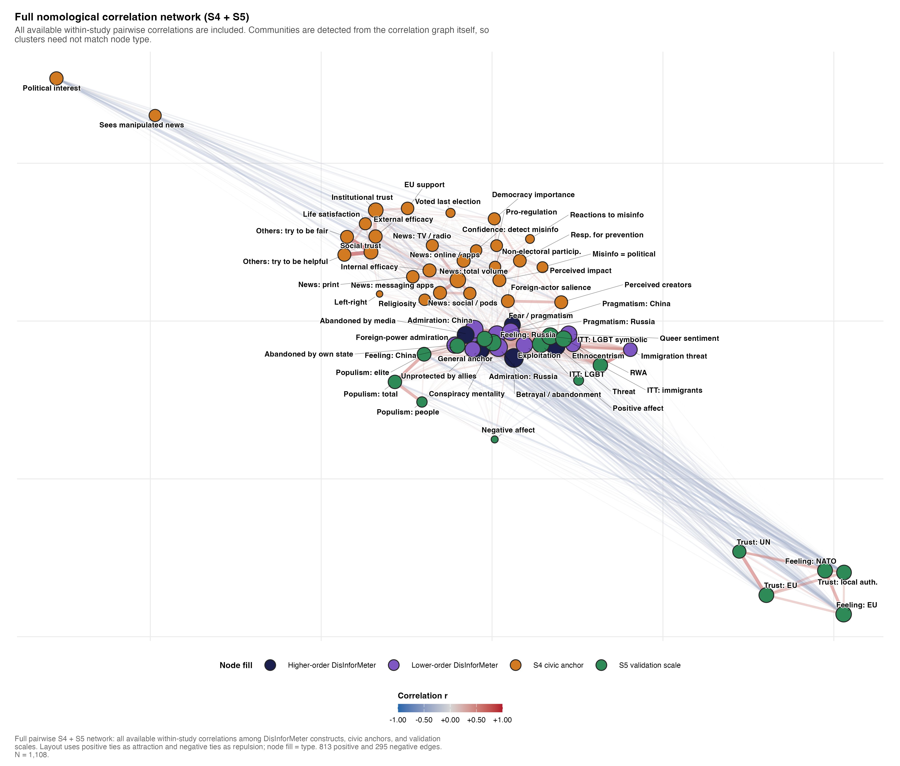
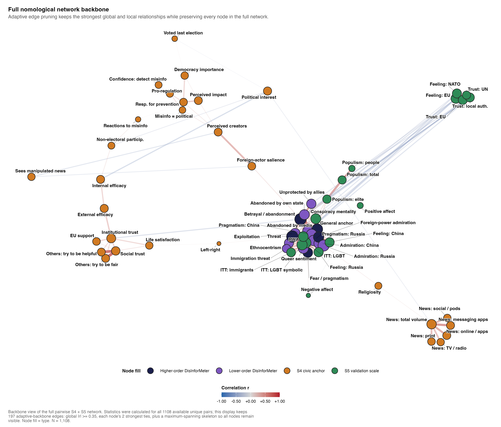
Code
R/policy_report/14_nomological_network.R (network edge/node producer)
#' R/policy_report/14_nomological_network.R
#'
#' Build a unified edge + node list from the S4 civic-anchor correlation
#' table and the S5 nomological-validation table. The output drives the
#' two correlation-network figures F-31 (force-directed) and F-32
#' (radial / chord).
#'
#' Inputs:
#' outputs/tables/s4_external_anchor_correlations.csv (S4: HO DisInforMeter
#' × 29 civic anchors)
#' outputs/tables/s5_validation_results.csv (S5: HO + LO
#' DisInforMeter × 13
#' validation scales)
#'
#' Outputs (under outputs/policy_report/cache/):
#' nomological_network_edges.csv long edge list
#' nomological_network_nodes.csv node table with type + label + family
#'
#' Edge schema
#' -----------
#' from_id, to_id canonical node ids on either side
#' from_type, to_type one of {ho_disinfo, lo_disinfo, civic_anchor,
#' validation_scale}
#' r correlation (S4: pooled r; S5: Pearson r)
#' n sample size
#' p two-sided p
#' p_fdr FDR-corrected p (NA for S5; we only run FDR on
#' the larger S4 grid)
#' source_study "S4" or "S5"
#' significant TRUE iff p_fdr < .05 (S4) or p < .05 (S5)
#' abs_r abs(r), used by ggraph for layout weight
#' sign -1, 0, or +1
#'
#' Node schema
#' -----------
#' id, label, short_label, type, family, source_study, n_edges
#'
#' Construct mapping is documented inline. Lower-order labels follow the S5
#' construct_label field; higher-order labels mirror those in
#' R/policy_report/_helpers.R::higher_order_construct_map().
source(here::here("R", "policy_report", "_helpers.R"))
suppressPackageStartupMessages({
library(dplyr)
library(tidyr)
library(readr)
library(tibble)
library(stringr)
library(purrr)
})
# ---------------------------------------------------------------------------
# Canonical mapping: S4 / S5 construct labels -> unified node ids + types
# ---------------------------------------------------------------------------
#' S4 predictor_label -> canonical id + type.
#' S4 carries six "higher-order" composites in the anchor table; SUPF /
#' SUPFCH are the foreign-power admiration anchors at the Russian and
#' Chinese facet level and are classified as lower-order in the unified
#' taxonomy (the higher-order roll-up SUP_GEN is provided by S5 only).
.s4_node_map <- function() {
tibble::tribble(
~predictor_label, ~node_id, ~node_type, ~node_label,
"GEN", "GEN", "ho_disinfo", "General anchor",
"THREAT", "THREAT", "ho_disinfo", "Threat",
"ABAND", "ABAND", "ho_disinfo", "Betrayal / abandonment",
"FEAR", "FEAR", "ho_disinfo", "Fear / pragmatism",
"SUPF", "SUP_RU", "lo_disinfo", "Admiration: Russia",
"SUPFCH", "SUP_CH", "lo_disinfo", "Admiration: China"
)
}
#' S5 construct_label -> canonical id + type.
#' Higher-order rows correspond to the "[general]" / "General" labels which
#' aggregate the S5-only facets; everything else is lower-order.
.s5_node_map <- function() {
tibble::tribble(
~construct_label, ~node_id, ~node_type, ~node_label,
# higher-order
"General", "GEN", "ho_disinfo", "General anchor",
"Threat [general]", "THREAT", "ho_disinfo", "Threat",
"Abandoned [general]", "ABAND", "ho_disinfo", "Betrayal / abandonment",
"Fear [general]", "FEAR", "ho_disinfo", "Fear / pragmatism",
"Superiority [general]", "SUP_GEN", "ho_disinfo", "Foreign-power admiration",
# lower-order — Threat facets
"Exploitation", "EXPL", "lo_disinfo", "Exploitation",
"Queer Sentiment", "GAY", "lo_disinfo", "Queer sentiment",
"Immigration", "MIGR", "lo_disinfo", "Immigration threat",
"Poisonous ethnocentrism", "CET", "lo_disinfo", "Ethnocentrism",
# lower-order — Aband facets
"Unprotected by international allies", "UNP", "lo_disinfo", "Unprotected by allies",
"Abandoned by media (censorship)", "CEN", "lo_disinfo", "Abandoned by media",
"Abandoned by own state", "ABAN_STATE", "lo_disinfo", "Abandoned by own state",
# lower-order — Fear facets
"Pragmatism Russia", "PRAG_RU", "lo_disinfo", "Pragmatism: Russia",
"Pragmatism China", "PRAG_CH", "lo_disinfo", "Pragmatism: China",
# lower-order — Admiration facets
"Superiority Russia", "SUP_RU", "lo_disinfo", "Admiration: Russia",
"Superiority China", "SUP_CH", "lo_disinfo", "Admiration: China"
)
}
# Civic anchors (S4) -- map family from anchor_corrs long table directly; we
# only need to assign short labels for readability. Anchor labels exceed 30
# chars in several cases.
.civic_anchor_short_labels <- c(
"Democracy importance" = "Democracy importance",
"EU support" = "EU support",
"External political efficacy" = "External efficacy",
"Generalised social trust" = "Social trust",
"Institutional trust" = "Institutional trust",
"Internal political efficacy" = "Internal efficacy",
"Left-right self-placement" = "Left-right",
"Life satisfaction" = "Life satisfaction",
"Political interest" = "Political interest",
"Religiosity" = "Religiosity",
"Confidence detecting misinfo" = "Confidence: detect misinfo",
"Foreign-actor topic salience" = "Foreign-actor salience",
"Misinfo seen as political" = "Misinfo = political",
"Perceived misinfo creators" = "Perceived creators",
"Perceived misinfo impact" = "Perceived impact",
"Pro-regulation of misinfo" = "Pro-regulation",
"Responsibility for prevention" = "Resp. for prevention",
"Frequency of seeing manipulated news" = "Sees manipulated news",
"Non-electoral participation (count)" = "Non-electoral particip.",
"Reactions to suspected misinformation (count)" = "Reactions to misinfo",
"Voted in last national election" = "Voted last election",
"Belief others try to be fair" = "Others: try to be fair",
"Belief others try to be helpful" = "Others: try to be helpful",
"News use — TV / radio" = "News: TV / radio",
"News use — aggregate" = "News: total volume",
"News use — messaging apps" = "News: messaging apps",
"News use — online news / apps" = "News: online / apps",
"News use — print" = "News: print",
"News use — social media / podcasts" = "News: social / pods"
)
# S5 validation labels -> short labels (kept compact for ggraph node text).
.validation_short_labels <- c(
"Conspiracy Mentality Questionnaire (CMQ; 5-item)" = "Conspiracy mentality",
"Populist attitudes scale (Silva, 2017)" = "Populist attitudes",
"Institutional trust battery (ESS) - EU" = "Trust: EU",
"Institutional trust battery (ESS) - United Nations" = "Trust: UN",
"Right Wing Authoritarianism (RWA short scale)" = "RWA",
"Intergroup threat scale (ITT) - LQBT" = "ITT: LGBT",
"Intergroup threat scale (ITT) - Immigrants" = "ITT: immigrants",
"feeling thermometer - EU" = "Feeling: EU",
"feeling thermometer - NATO" = "Feeling: NATO",
"feeling thermometer - Russia" = "Feeling: Russia",
"feeling thermometer - China" = "Feeling: China",
"Institutional trust battery (ESS) - Local Authorities" = "Trust: local auth.",
"Trait affectivity (I‑PANAS‑SF)" = "Negative affect"
)
.label_from_col <- function(x) {
x %>%
stringr::str_remove("^scale_") %>%
stringr::str_replace_all("_", " ") %>%
stringr::str_to_sentence()
}
.validation_col_short_labels <- c(
scale_cmq = "Conspiracy mentality",
scale_pop = "Populism: total",
scale_pop_people = "Populism: people",
scale_pop_elite = "Populism: elite",
scale_trust_local = "Trust: local auth.",
scale_trust_eu = "Trust: EU",
scale_trust_un = "Trust: UN",
scale_feel_eu = "Feeling: EU",
scale_feel_nato = "Feeling: NATO",
scale_feel_ru = "Feeling: Russia",
scale_feel_ch = "Feeling: China",
scale_rwa = "RWA",
scale_itt_imi = "ITT: immigrants",
scale_itt_lgbt = "ITT: LGBT",
scale_itt_lgbt_sym = "ITT: LGBT symbolic",
scale_panas_pa = "Positive affect",
scale_panas_na = "Negative affect"
)
.validation_short_label <- function(validation_col, validation_label) {
by_col <- unname(.validation_col_short_labels[validation_col])
by_label <- unname(.validation_short_labels[validation_label])
dplyr::coalesce(by_col, by_label, .label_from_col(validation_col))
}
.s4_predictor_catalog <- function() {
.s4_node_map() %>%
dplyr::transmute(
column = predictor_label,
source_column = dplyr::case_when(
predictor_label == "GEN" ~ "scale_gen",
predictor_label == "THREAT" ~ "scale_threat_long",
predictor_label == "ABAND" ~ "scale_aband_long",
predictor_label == "FEAR" ~ "scale_prag_long",
predictor_label == "SUPF" ~ "scale_supr",
predictor_label == "SUPFCH" ~ "scale_supch",
TRUE ~ NA_character_
),
id = node_id,
type = node_type,
label = node_label,
family = dplyr::if_else(type == "ho_disinfo",
"Higher-order DisInforMeter",
"Lower-order DisInforMeter")
)
}
.s4_anchor_catalog <- function(anchor_tbl = NULL) {
if (is.null(anchor_tbl)) {
anchor_tbl <- readr::read_csv(policy_report_paths()$anchor_corrs,
show_col_types = FALSE)
}
anchor_tbl %>%
dplyr::distinct(anchor, anchor_label, family) %>%
dplyr::transmute(
source_column = anchor,
id = paste0("ANCH_", toupper(stringr::str_replace_all(anchor, "[^A-Za-z0-9]+", "_"))),
type = "civic_anchor",
label = unname(.civic_anchor_short_labels[anchor_label]),
family = family
)
}
.s5_construct_catalog <- function() {
tibble::tribble(
~construct_label, ~source_column,
"General", "scale_gen",
"Threat [general]", "scale_threat",
"Abandoned [general]", "scale_aband",
"Fear [general]", "scale_fear",
"Superiority [general]", "scale_sup_gen",
"Exploitation", "scale_expl",
"Queer Sentiment", "scale_gay",
"Immigration", "scale_migr",
"Poisonous ethnocentrism", "scale_cet",
"Unprotected by international allies", "scale_unp",
"Abandoned by media (censorship)", "scale_cen",
"Abandoned by own state", "scale_aban_state",
"Pragmatism Russia", "scale_pragr",
"Pragmatism China", "scale_pragch",
"Superiority Russia", "scale_supr",
"Superiority China", "scale_supch"
) %>%
dplyr::left_join(.s5_node_map(), by = "construct_label") %>%
dplyr::transmute(
source_column,
id = node_id,
type = node_type,
label = node_label,
family = dplyr::if_else(type == "ho_disinfo",
"Higher-order DisInforMeter",
"Lower-order DisInforMeter")
)
}
.s5_validation_catalog <- function(results = NULL) {
if (is.null(results)) {
results <- readr::read_csv(here::here("outputs", "tables",
"s5_validation_results.csv"),
show_col_types = FALSE)
}
results %>%
dplyr::filter(is.na(item_subset_label), is.na(skip_reason)) %>%
dplyr::distinct(validation_col, validation_label) %>%
dplyr::transmute(
source_column = validation_col,
id = paste0("VAL_", toupper(stringr::str_replace_all(validation_col, "[^A-Za-z0-9]+", "_"))),
type = "validation_scale",
label = .validation_short_label(validation_col, validation_label),
family = "Validation scale"
)
}
.s4_full_frame <- function() {
paths <- policy_report_paths()
s4_scales <- arrow::read_parquet(paths$s4_scales)
s4_items <- arrow::read_parquet(paths$s4_items)
s4_scales %>%
dplyr::left_join(
s4_items %>%
dplyr::transmute(
response_id,
anchor_voted = dplyr::case_when(
q24 == 1 ~ 1,
q24 == 2 ~ 0,
TRUE ~ NA_real_
),
anchor_news_manip_freq = q9,
anchor_fair_belief = q18,
anchor_helpful_belief = q19,
anchor_media_print = q3_1,
anchor_media_tv_radio = q3_2,
anchor_media_online = q3_3,
anchor_media_messaging = q3_4,
anchor_media_social = q3_5
),
by = "response_id"
)
}
.pairwise_cor_edges <- function(df, nodes, source_study) {
nodes <- nodes %>%
dplyr::filter(source_column %in% names(df)) %>%
dplyr::distinct(id, source_column, .keep_all = TRUE)
if (nrow(nodes) < 2L) {
return(tibble::tibble())
}
pairs <- utils::combn(nodes$source_column, 2, simplify = FALSE)
purrr::map_dfr(pairs, function(pair) {
a <- nodes %>% dplyr::filter(source_column == pair[[1]]) %>% dplyr::slice(1)
b <- nodes %>% dplyr::filter(source_column == pair[[2]]) %>% dplyr::slice(1)
cc <- stats::complete.cases(df[, pair, drop = FALSE])
n <- sum(cc)
if (n < 10L ||
stats::sd(df[[pair[[1]]]][cc], na.rm = TRUE) == 0 ||
stats::sd(df[[pair[[2]]]][cc], na.rm = TRUE) == 0) {
r <- NA_real_; p <- NA_real_
} else {
ct <- suppressWarnings(stats::cor.test(df[[pair[[1]]]][cc],
df[[pair[[2]]]][cc]))
r <- unname(ct$estimate)
p <- ct$p.value
}
tibble::tibble(
from_id = a$id,
to_id = b$id,
from_type = a$type,
to_type = b$type,
from_label = a$label,
to_label = b$label,
from_family = a$family,
to_family = b$family,
r = r,
n = n,
p = p,
source_study = source_study,
edge_scope = dplyr::case_when(
stringr::str_detect(a$type, "disinfo") & stringr::str_detect(b$type, "disinfo") ~ "within_disinformeter",
!stringr::str_detect(a$type, "disinfo") & !stringr::str_detect(b$type, "disinfo") ~ "within_external",
TRUE ~ "cross_domain"
)
)
}) %>%
dplyr::filter(!is.na(r))
}
.fisher_average <- function(r, n) {
ok <- !is.na(r) & !is.na(n) & n > 3
if (!any(ok)) return(NA_real_)
r <- pmin(pmax(r[ok], -0.999999), 0.999999)
w <- pmax(n[ok] - 3, 1)
tanh(stats::weighted.mean(atanh(r), w = w))
}
.aggregate_full_edges <- function(edges) {
edges %>%
dplyr::mutate(
id_a = pmin(from_id, to_id),
id_b = pmax(from_id, to_id)
) %>%
dplyr::group_by(id_a, id_b) %>%
dplyr::summarise(
r = .fisher_average(r, n),
n = max(n, na.rm = TRUE),
p = if (dplyr::n() == 1L) dplyr::first(p) else NA_real_,
source_study = paste(sort(unique(source_study)), collapse = " + "),
source_edge_count = dplyr::n(),
edge_scope = paste(sort(unique(edge_scope)), collapse = " + "),
.groups = "drop"
) %>%
dplyr::transmute(
from_id = id_a,
to_id = id_b,
r,
n,
p,
p_fdr = stats::p.adjust(p, method = "BH"),
source_study,
source_edge_count,
edge_scope,
significant = dplyr::if_else(is.na(p), NA, p < 0.05),
abs_r = abs(r),
sign = sign(r)
)
}
# ---------------------------------------------------------------------------
# Edge builders
# ---------------------------------------------------------------------------
#' Build the S4 (HO DisInforMeter × civic anchor) edges.
#'
#' Keeps edges where |r| >= `min_r` and `p_fdr < .05`. Default threshold is
#' 0.10 because the S4 N is ~8,000 — at that N a |r| of 0.03 is still
#' "significant" but not meaningful.
.build_s4_edges <- function(min_r = 0.10) {
paths <- policy_report_paths()
long <- readr::read_csv(paths$anchor_corrs, show_col_types = FALSE)
s4_map <- .s4_node_map()
long %>%
dplyr::transmute(
from_id = s4_map$node_id[match(predictor_label, s4_map$predictor_label)],
from_type = s4_map$node_type[match(predictor_label, s4_map$predictor_label)],
from_label = s4_map$node_label[match(predictor_label, s4_map$predictor_label)],
to_label_long = anchor_label,
to_label = unname(.civic_anchor_short_labels[anchor_label]),
to_id = paste0("ANCH_", toupper(stringr::str_replace_all(anchor, "[^A-Za-z0-9]+", "_"))),
to_type = "civic_anchor",
family = family,
r = r_pooled,
n = n_pooled,
p = p_pooled,
p_fdr = p_fdr,
source_study = "S4",
significant = !is.na(p_fdr) & p_fdr < 0.05
) %>%
dplyr::filter(!is.na(r), significant, abs(r) >= min_r)
}
#' Build the S5 (HO + LO DisInforMeter × validation scale) edges.
#'
#' Filters: primary-row only (`is.na(item_subset_label)`), no skip reason,
#' `|r| >= min_r`. We use Pearson r as the canonical correlation; Spearman
#' is available but the S4 side is Pearson so this keeps the two studies
#' comparable.
.build_s5_edges <- function(min_r = 0.10) {
raw <- readr::read_csv(here::here("outputs", "tables",
"s5_validation_results.csv"),
show_col_types = FALSE)
s5_map <- .s5_node_map()
raw %>%
dplyr::filter(is.na(item_subset_label),
is.na(skip_reason),
!is.na(r)) %>%
dplyr::transmute(
from_id = s5_map$node_id[match(construct_label, s5_map$construct_label)],
from_type = s5_map$node_type[match(construct_label, s5_map$construct_label)],
from_label = s5_map$node_label[match(construct_label, s5_map$construct_label)],
to_label_long = validation_label,
to_label = .validation_short_label(validation_col, validation_label),
to_id = paste0("VAL_", toupper(stringr::str_replace_all(validation_col, "[^A-Za-z0-9]+", "_"))),
to_type = "validation_scale",
family = "Validation scale",
r = r,
n = n,
p = p_two_sided,
p_fdr = NA_real_,
source_study = "S5",
significant = !is.na(p_two_sided) & p_two_sided < 0.05
) %>%
dplyr::filter(abs(r) >= min_r, significant)
}
# ---------------------------------------------------------------------------
# Compute + main
# ---------------------------------------------------------------------------
compute_nomological_network <- function(min_r = 0.10) {
edges_s4 <- .build_s4_edges(min_r = min_r)
edges_s5 <- .build_s5_edges(min_r = min_r)
if (anyNA(edges_s4$from_id))
stop("[14] Unmapped S4 predictor_label -- update .s4_node_map().",
call. = FALSE)
if (anyNA(edges_s5$from_id))
stop("[14] Unmapped S5 construct_label -- update .s5_node_map().",
call. = FALSE)
if (anyNA(edges_s4$to_label))
stop("[14] Unmapped S4 civic anchor -- update .civic_anchor_short_labels.",
call. = FALSE)
if (anyNA(edges_s5$to_label))
stop("[14] Unmapped S5 validation_label -- update .validation_short_labels.",
call. = FALSE)
edges <- dplyr::bind_rows(edges_s4, edges_s5) %>%
dplyr::mutate(
abs_r = abs(r),
sign = sign(r)
)
# Build the node table.
from_nodes <- edges %>%
dplyr::distinct(id = from_id, type = from_type, label = from_label) %>%
dplyr::mutate(family = dplyr::if_else(type == "ho_disinfo",
"Higher-order DisInforMeter",
"Lower-order DisInforMeter"))
to_nodes <- edges %>%
dplyr::distinct(id = to_id, type = to_type, label = to_label,
family = family)
nodes <- dplyr::bind_rows(from_nodes, to_nodes) %>%
dplyr::distinct(id, type, .keep_all = TRUE)
# n_edges per node (used by F-31 for sizing).
deg <- edges %>%
dplyr::select(from_id, to_id, abs_r) %>%
tidyr::pivot_longer(c(from_id, to_id), values_to = "id") %>%
dplyr::group_by(id) %>%
dplyr::summarise(
n_edges = dplyr::n(),
sum_abs_r = sum(abs_r, na.rm = TRUE),
.groups = "drop"
)
nodes <- nodes %>%
dplyr::left_join(deg, by = "id") %>%
dplyr::mutate(n_edges = tidyr::replace_na(n_edges, 0L),
sum_abs_r = tidyr::replace_na(sum_abs_r, 0))
list(edges = edges, nodes = nodes)
}
compute_nomological_full_network <- function() {
anchor_tbl <- readr::read_csv(policy_report_paths()$anchor_corrs,
show_col_types = FALSE)
s5_results <- readr::read_csv(here::here("outputs", "tables",
"s5_validation_results.csv"),
show_col_types = FALSE)
s4_nodes <- dplyr::bind_rows(
.s4_predictor_catalog(),
.s4_anchor_catalog(anchor_tbl)
) %>%
dplyr::filter(!is.na(id), !is.na(label))
s5_nodes <- dplyr::bind_rows(
.s5_construct_catalog(),
.s5_validation_catalog(s5_results)
) %>%
dplyr::filter(!is.na(id), !is.na(label))
s4_edges_raw <- .pairwise_cor_edges(.s4_full_frame(), s4_nodes, "S4")
s5_edges_raw <- .pairwise_cor_edges(arrow::read_parquet(policy_report_paths()$s5_scales),
s5_nodes, "S5")
raw_edges <- dplyr::bind_rows(s4_edges_raw, s5_edges_raw)
edges <- .aggregate_full_edges(raw_edges)
node_lookup <- dplyr::bind_rows(
s4_nodes %>% dplyr::select(id, type, label, family),
s5_nodes %>% dplyr::select(id, type, label, family)
) %>%
dplyr::distinct(id, .keep_all = TRUE)
nodes_used <- tibble::tibble(id = unique(c(edges$from_id, edges$to_id))) %>%
dplyr::left_join(node_lookup, by = "id")
if (anyNA(nodes_used$type) || anyNA(nodes_used$label)) {
missing_ids <- nodes_used$id[is.na(nodes_used$type) | is.na(nodes_used$label)]
stop("[14] Full network has unmapped node ids: ",
paste(missing_ids, collapse = ", "), call. = FALSE)
}
deg <- edges %>%
dplyr::select(from_id, to_id, abs_r) %>%
tidyr::pivot_longer(c(from_id, to_id), values_to = "id") %>%
dplyr::group_by(id) %>%
dplyr::summarise(
n_edges = dplyr::n(),
sum_abs_r = sum(abs_r, na.rm = TRUE),
.groups = "drop"
)
nodes <- nodes_used %>%
dplyr::left_join(deg, by = "id") %>%
dplyr::mutate(
n_edges = tidyr::replace_na(n_edges, 0L),
sum_abs_r = tidyr::replace_na(sum_abs_r, 0)
)
list(edges = edges, nodes = nodes, raw_edges = raw_edges)
}
main_14 <- function() {
paths <- policy_report_paths()
ensure_policy_report_dirs()
res <- compute_nomological_network()
edges <- res$edges; nodes <- res$nodes
full_res <- compute_nomological_full_network()
full_edges <- full_res$edges
full_nodes <- full_res$nodes
full_raw_edges <- full_res$raw_edges
validate_policy_report_table(
edges,
label = "14 / nomological_network_edges.csv",
required_cols = c("from_id", "to_id", "from_type", "to_type",
"r", "abs_r", "sign", "source_study"),
country_col = NULL,
range_checks = list(r = c(-1, 1), abs_r = c(0, 1))
)
validate_policy_report_table(
nodes,
label = "14 / nomological_network_nodes.csv",
required_cols = c("id", "type", "label", "family", "n_edges"),
country_col = NULL
)
validate_policy_report_table(
full_edges,
label = "14 / nomological_network_full_edges.csv",
required_cols = c("from_id", "to_id", "r", "abs_r", "sign",
"source_study", "edge_scope"),
country_col = NULL,
range_checks = list(r = c(-1, 1), abs_r = c(0, 1))
)
validate_policy_report_table(
full_nodes,
label = "14 / nomological_network_full_nodes.csv",
required_cols = c("id", "type", "label", "family", "n_edges"),
country_col = NULL
)
policy_report_message(sprintf(" edges: %d (S4: %d, S5: %d)",
nrow(edges),
sum(edges$source_study == "S4"),
sum(edges$source_study == "S5")))
policy_report_message(sprintf(" nodes: %d (%s)",
nrow(nodes),
paste(sort(unique(nodes$type)), collapse = ", ")))
policy_report_message(sprintf(" |r| range: [%.2f, %.2f]",
min(edges$abs_r), max(edges$abs_r)))
policy_report_message(sprintf(" full pairwise edges: %d raw -> %d aggregated",
nrow(full_raw_edges), nrow(full_edges)))
policy_report_message(sprintf(" full pairwise nodes: %d (%s)",
nrow(full_nodes),
paste(sort(unique(full_nodes$type)), collapse = ", ")))
policy_report_message(sprintf(" full |r| range: [%.2f, %.2f]",
min(full_edges$abs_r), max(full_edges$abs_r)))
out_edges <- file.path(paths$cache, "nomological_network_edges.csv")
out_nodes <- file.path(paths$cache, "nomological_network_nodes.csv")
out_full_edges <- file.path(paths$cache, "nomological_network_full_edges.csv")
out_full_nodes <- file.path(paths$cache, "nomological_network_full_nodes.csv")
out_full_raw <- file.path(paths$cache, "nomological_network_full_source_edges.csv")
readr::write_csv(edges, out_edges)
readr::write_csv(nodes, out_nodes)
readr::write_csv(full_edges, out_full_edges)
readr::write_csv(full_nodes, out_full_nodes)
readr::write_csv(full_raw_edges, out_full_raw)
policy_report_message(sprintf("wrote %s", out_edges))
policy_report_message(sprintf("wrote %s", out_nodes))
policy_report_message(sprintf("wrote %s", out_full_edges))
policy_report_message(sprintf("wrote %s", out_full_nodes))
policy_report_message(sprintf("wrote %s", out_full_raw))
invisible(list(thresholded = res, full = full_res))
}
if (sys.nframe() == 0L) main_14()